Course: Augmented & Virtual Reality (AR/VR) · Semester VII
End-Semester Examination (ESE) · Project Report
NEON BREACH
3D Arena Shooter | AR/VR End-Semester Project
One Unity 6 project, four game modes — Shooter · Archery · Parachute · Rat Shooter (plus a bonus Farm Sniper scene) Desktop · Split-screen co-op · PC VR through OpenXR · Mixed reality on Meta Quest
Submitted by
Yash Sawant MIS 642402009 Shivprakash Chavan MIS 612302059
Academic Year 2026–27 · November 2026
AbstractQQMK0001QQ
NEON BREACH is an immersive first-person game project built in Unity 6 (6000.5.5f1) for the Augmented and Virtual Reality course. It addresses a common weakness of student XR projects: a single demonstration scene that runs on one device, ignores comfort and performance, and cannot be evaluated without the headset it was built for. The project delivers four game modes in one code base, all launched from one main menu: a wave-based neon arena Shooter, an Archery range with physically simulated arrows and wind, a 3,000 m Parachute skydive with a canopy landing, and a cartoon Rat Shooter; a bonus Farm Sniper level is included as a standalone scene. All of them share one player, input, audio and user-interface framework.
The AR/VR layer is built on the OpenXR standard through Unity's XR Plug-in Management. The XR Hands package provides articulated hand tracking with gesture recognition (pinch and open palm), and AR Foundation with Unity's Meta OpenXR package provides a mixed-reality "breach" mode, in which the virtual arena disappears and enemies spawn along the player's real room boundary. A single PlayerInputState abstraction lets keyboard and mouse, gamepads, tracked controllers and bare hands drive identical gameplay code. VR comfort is designed in: a speed-driven tunnelling vignette, snap or smooth turning about the head, a seated mode, room-scale head following and no camera shake. A custom HRTF-style binaural spatializer (Woodworth interaural time difference, level difference and head-shadow filtering), controller haptics, NavMesh-driven enemy AI, quadratic-drag free-fall physics and arrow ballistics complete the feature set. Every model, texture, sound and level is generated procedurally in C# (129 scripts, about 33,400 lines).
During the preparation of this report the project was audited against the ten ESE criteria. Four gaps were found and fixed: the XR loader was not enabled, a Run-In-Background setting failed XR project validation, number keys mapped to the wrong Input System keys, and VR mode logged a field-of-view warning. The complete VR input and rendering pipeline was then verified end to end, without a headset, using the OpenXR Mock Runtime and the conformance-automation extension. Two polish passes followed: an archery trajectory guide that uses the arrows' exact flight model, fade transitions and animated hover feedback (27 Nov 2026), and a cinematic startup intro in which velvet theatre curtains with neon piping open on a neon stage and reveal “WELCOME TO NEON BREACH” before the main menu (28 Nov 2026). Every change was compiled, played and measured with no errors or warnings, and a Windows player was built and run. Average frame times are 2.5–3.3 ms (about 300–400 FPS) in every mode, well inside the 11.1 ms budget of a 90 Hz headset. The report is organised by the ten evaluation criteria, one chapter per criterion, with real screenshots, Unity Editor captures and source listings as evidence.
Keywords: Virtual Reality, Mixed Reality, OpenXR, Unity 6, XR Hands, AR Foundation, hand tracking, spatial audio (HRTF), cybersickness, procedural content generation, NavMesh AI, game physics.
AcknowledgementQQMK0002QQ
We express our sincere gratitude to our project guide for the guidance, encouragement and valuable feedback given at every stage of this work. The suggestions on the scope of the project, on immersive interaction and on the evaluation criteria shaped both the system and this report.
We thank the faculty and staff of COEP Technological University for the Augmented and Virtual Reality course, which introduced us to the theory of tracking, registration and immersive interaction that this project puts into practice, and for the laboratory and computing facilities made available to us.
We also acknowledge the open standards and documentation that made the project possible: the Khronos Group's OpenXR specification, and Unity Technologies' documentation for XR Plug-in Management, OpenXR, XR Hands, AR Foundation, the Input System and AI Navigation.
Finally, we thank our families and friends for their constant support throughout the semester.
Yash Sawant (MIS 642402009) Shivprakash Chavan (MIS 612302059)
AbbreviationsQQMK0003QQ
Term
Meaning
Term
Meaning
AR / VR / MR / XR
Augmented / Virtual / Mixed / Extended Reality
HMD
Head-mounted display
OpenXR
Khronos Group's royalty-free standard API for XR runtimes and devices
DoF
Degrees of freedom (3DoF orientation, 6DoF orientation + position)
AR Foundation
Unity's cross-platform AR framework (sessions, camera, planes)
XR Hands
Unity package exposing 26 tracked joints per hand
HRTF
Head-related transfer function
ITD / ILD
Interaural time / level difference
NavMesh
Navigation mesh used for AI path-finding
AGL
Altitude above ground level
FOV
Field of view
ADS
Aim down sights
IMGUI
Unity's immediate-mode GUI system
HUD
Heads-up display
CC
Unity CharacterController (capsule collider with move-and-slide)
FR / NFR
Functional / non-functional requirement
SPI
Single-pass instanced stereo rendering
MR mode
The project's mixed-reality "breach" mode
PlayerPrefs
Unity's persistent key–value store (settings, scores)
Figure 1.1 The four game modes, the bonus Farm Sniper scene and the VR view, all captured from the running project (Unity 6000.5.5f1, Play mode, 1920×1080). The VR frame was rendered through the real OpenXR pipeline with the OpenXR Mock Runtime (see Chapter 5).10
Figure 3.1 Milgram and Kishino's reality–virtuality continuum [2] and where the modes of NEON BREACH sit on it.16
Figure 3.2 Software layers between the game and the headset. Swapping the runtime at the bottom does not require any change to the game code above it.18
Figure 4.1 Layered architecture of NEON BREACH. Every input device writes into one PlayerInputState; gameplay systems never query a device directly.21
Figure 4.2 Simplified class diagram of the shared framework (fields and methods abridged).22
Figure 4.3 The game state machine implemented in GameManager.23
Figure 4.4 Scenes and navigation. Shooter, Archery and Parachute share one scene and switch at runtime; the other two games are separate scenes.24
Figure 4.5 Sequence of a runtime mode switch.24
Figure 4.6 NeonBreach scene hierarchy in edit mode (Player expanded).25
Figure 4.7 Runtime hierarchy with the VR rig active (OpenXR Mock Runtime): tracked hands, wrist display, laser, comfort vignette, VR menu, NavMesh object, enemies.25
Figure 4.8 Component structure of the Rat Shooter.26
Figure 4.9 Rat Shooter states (enum RatState).26
Figure 4.10 Hand-over between the startup intro and the existing main menu. The numbers in brackets are the script execution orders.27
Figure 5.1 XR Plug-in Management (Windows tab) after the fix: OpenXR is the active plug-in provider and Initialize XR on Startup is enabled.29
Figure 5.2 OpenXR settings: single-pass instanced rendering, five interaction profiles, Hand Tracking Subsystem and Meta Hand Tracking Aim.29
Figure 5.3 XR Plug-in Management → Project Validation after the fixes: Issues (0) of Checks (12). Before the fix it reported that Run In Background must be enabled to avoid head-locked rendering when focus is lost.30
Figure 5.4 Frames rendered from the tracked head pose during the Mock Runtime session. All content, poses and interactions are the real game responding to OpenXR input; the only simulated part is the device itself.35
Figure 6.1 Tracking pipeline: from sensor data to the poses of the camera and hands in the game world.36
Figure 6.2 The room model produced by BuildRoom for the 3.5 × 3.5 m fallback room recorded during verification, computed with the same algorithm: boundary (dashed), wall colliders (grey) and spawn points 0–11 (magenta). On a Quest the user's own boundary polygon replaces the square.39
Figure 7.1 Neon Grid arena rendered from the saved scene (Editor).42
Figure 7.2 Plan view: central platform, symmetric cover, pillars and corner towers.42
Figure 7.3 Foundry arena in play.42
Figure 7.4 Shield Tank and its energy shield42
Figure 7.5 Primitive-built enemies flashing white on hit during the slow-motion power-up42
Figure 7.6 Cartoon mouse knocked out by a headshot42
Figure 7.8 Zoomed view of the 20 m target in round 3 (wind 6.6 m/s).43
Figure 7.9 The procedurally generated parachute world at three altitudes.43
Figure 7.10 Rat Shooter farmyard rendered from the saved scene (Editor).44
Figure 7.11 Farm Sniper level (Editor render; crops are planted at runtime).44
Figure 8.1 2.1 s: the procedurally generated stage with the curtains closed – velvet folds in the spotlight, neon piping at the seam, scalloped valance, footlights.48
Figure 8.2 4.45 s: the curtains part (hems trailing the tops) and NEON BREACH ignites from the centre while the magenta layer converges.48
Figure 8.3 8.0 s: the finished title held on the open stage, curtains bunched at the sides.48
Figure 8.4 The same moment at 4:3 (1440×1080): the title is scaled to fit between the curtains.48
Figure 8.5 Main menu captured on 27 Nov 2026 after the polish pass: four game-mode buttons with best scores (Rat Shooter in its gold accent), tutorial, leaderboard, settings, help and quit; mission set-up panel on the right.49
Figure 8.6 Pause menu with the pointer over SETTINGS: glow, accent bar and highlighted label (27 Nov 2026).50
Figure 8.7 Archery results screen with the new mode-card panels (Shooter, Archery, Parachute) and best scores.50
Figure 8.8 Navigation flow between the menus and the four game modes.50
Figure 8.9 Parachute start, first frame: black (mean brightness 3.0 of 255).51
Figure 8.10 0.25 s later: the island fading in (48.1); complete at 1.0 s (128.3).51
Figure 8.11 Archery results 0.2 s after the run ended: the panel is still partly transparent.51
Figure 8.12 Shooter HUD at the start of wave 1 (27 Nov 2026).51
Figure 8.14 Archery: bullseye with streak multiplier and the wind panel.51
Figure 8.15 Parachute: the OPEN PARACHUTE prompt inside the deploy window.51
Figure 8.16 Rat Shooter HUD: level, timer, mice left, score and ammunition.51
Figure 8.17 The guide at full draw: a flatter, faster arc.51
Figure 9.1 State machine of a cartoon mouse (MouseAI.State).57
Figure 12.1 Average frame time per mode against the 90 Hz (11.1 ms) and 72 Hz (13.9 ms) VR frame budgets.67
List of TablesQQMK0006QQ
Table 1.1 The four game modes of NEON BREACH and the bonus Farm Sniper scene9
Table 1.2 Improvements made in the polish passes11
Table 2.1 Project objectives, success criteria and achieved results13
Table 2.2 Functional requirements, implementing modules and verification status14
Table 2.3 Non-functional requirements and how they are met15
Table 3.1 Comparison of XR tracking technologies17
Table 3.2 Comparison of NEON BREACH with existing VR/MR applications20
Table 3.3 How the literature informed the design of NEON BREACH20
Table 4.1 Modules, responsibilities and code metrics (counted from the project on 28 Nov 2026)21
Table 4.2 Script execution order (lower runs earlier in each frame)22
Table 4.3 Design patterns in the code base27
Table 5.1 OpenXR features enabled for the Windows (Standalone) target29
Table 5.2 XR controller mapping (CommonUsages to game actions)31
Table 5.3 Calls used in the OpenXR Mock Runtime verification34
Table 5.4 Results of the OpenXR Mock Runtime verification (22 Nov 2026)34
Table 6.1 Registration check: injected tracking-space poses, predicted and measured world positions37
Table 6.2 Physics layers39
Table 6.3 Spatial queries used by the game40
Table 6.4 Spatial interaction capabilities and their verification status40
Table 7.1 Asset inventory of the project and how each asset type is produced41
Table 7.2 Weapon models and their statistics (from WeaponLibrary)42
Table 7.3 Measured optimisations (same camera pose, Ultra quality)46
Table 7.4 Rendering statistics per scene, measured on 22 Nov 2026 (Unity Editor, Play mode, 1920×1080, Ultra quality)46
Table 8.1 Timeline of the startup intro (default values; every duration is set in the Inspector)48
Table 8.2 HUD elements of the four game modes51
Table 8.3 Default controls for keyboard and mouse, gamepad and VR controllers52
Table 8.4 Review of the interface against Nielsen's usability heuristics53
Table 9.1 Advanced features and their verification status54
Table 10.1 Development and test environment (measured) and requirements58
Table 10.2 Technologies and tools used to build and verify the project59
Table 10.3 The most important scripts and their responsibilities59
Table 10.4 Test plan and results61
Table 10.5 Bugs and issues found and fixed during the ESE preparation62
Table 10.6 Documentation produced for the project63
Table 11.1 Set-up checklist for the demonstration64
Table 11.2 Fifteen-minute demonstration script64
Table 11.3 Features to demonstrate, expected outcome and rehearsal result (27 and 28 Nov 2026)65
Table 11.4 Where each evaluation criterion is evidenced during the demonstration65
Table 12.1 Average frame time per mode on the development PC67
Table 12.2 Outcome against the main objectives68
Evaluation Criteria and Evidence MapQQMK0007QQ
The End-Semester Examination evaluates the project on ten criteria of 5 marks each (total 50). This report gives every criterion its own chapter (Chapters 2–11, in rubric order). Each of these chapters starts on a new page with the criterion's name in bold at the top centre, the rubric's Excellent descriptor, and an evidence box listing the strongest evidence it contains. The table below lets an examiner jump straight to that evidence.
Problem statement and motivation (11.1 ms VR frame budget, cybersickness, device fragmentation); 9 measurable objectives; 24 functional and 10 non-functional requirements with verification status; scope and expected outcomes
Layered architecture, module decomposition with code metrics, class relationships, frame execution order, data flow, game state machine, scene and mode-switching flows, the startup-intro hand-over, scene hierarchies captured from the Unity Editor
OpenXR configuration (gap found and fixed), 7 enabled OpenXR features, VR rig, controller mapping, XR Hands gestures, AR Foundation MR mode, haptics, world-space VR UI; end-to-end VR verification with the OpenXR Mock Runtime and real VR frames
Coordinate systems and the OpenXR↔Unity handedness conversion; transform chain with measured registration values; height calibration, room-scale head following, snap turn about the head; MR boundary registration (walls, spawn points, NavMesh); collision layers and raycasting
Cinematic startup intro with skip and hand-over to the menu, main menu and navigation flow, HUDs of all four game modes, hover animation, fade transitions, archery trajectory guide, tutorial, settings, 4 languages, VR laser-pointer menu, controls for 3 device types, usability-heuristic review
Feature matrix against the rubric's list (animation, gesture, hand tracking, AI, anchors, image tracking) with honest status labels; ballistics and free-fall equations; spring-driven cloth animation and threaded audio synthesis of the intro; NavMesh AI; binaural audio; comfort; haptics
Measured hardware and software environment, tools, code metrics, important scripts, methodology, build steps, test plan with observed results (including the 28 Nov intro and standalone-build tests), bugs fixed, limitations, documentation deliverables
Demo set-up checklist, execution procedure, a timed 15-minute script that opens with the cinematic intro, features to show with expected outcomes and rehearsal results, a criterion-to-demo map, talking points and a contingency plan
Total
50
How to read the status labels. Throughout the report, features are marked with one of four labels:
VERIFIED ran and was checked in this project (Editor Play mode or an automated test);
VERIFIED (MOCK XR) ran through the real OpenXR pipeline using Unity's OpenXR Mock Runtime, which simulates a headset and controllers;
NEEDS HARDWARE implemented and compiled, but its final check needs a physical headset (for example, the passthrough camera feed);
PLANNED a future improvement that is not implemented.
Chapter 1IntroductionQQMK0008QQ
1.1 BackgroundQQMK0009QQ
Virtual reality (VR) places the user inside a computer-generated world. A head-mounted display (HMD) renders a separate image for each eye, and a tracking system measures where the head and hands are, so that the image changes exactly as the user moves. Augmented and mixed reality (AR/MR) keep the real world visible and register virtual content to it. Since 2019 the industry has converged on OpenXR, a royalty-free standard from the Khronos Group, which lets one application run on headsets from Meta, Valve, HTC, Microsoft and others. Consumer standalone headsets such as the Meta Quest 3 combine inside-out 6DoF tracking, controller-free hand tracking and colour passthrough cameras, so the same device supports both VR and MR.
1.2 Project OverviewQQMK0010QQ
NEON BREACH is a Unity 6 project that implements these requirements in a set of games that share one technical foundation. The project has four game modes, all started from one main menu. The main scene contains three of them (Shooter, Archery and Parachute), which the player can switch between at any time; the fourth, Rat Shooter, lives in its own scene and is loaded from the menu. A bonus Farm Sniper level is a further standalone scene opened from the Editor's Neon Breach menu. All of them reuse the same input, audio and settings systems. Table 1.1 summarises the games and Figure 1.1 shows them running.
Table 1.1 – The four game modes of NEON BREACH and the bonus Farm Sniper sceneQQMK0011QQ
Game
Scene
Core experience
Main XR / technical highlights
Shooter
NeonBreach.unity
Endless waves of six enemy types in a neon arena; three weapons, grenades, an upgrade shop between waves, power-ups, a boss every fifth wave, two arenas and two-player split-screen co-op
Figure 1.1 – The four game modes, the bonus Farm Sniper scene and the VR view, all captured from the running project (Unity 6000.5.5f1, Play mode, 1920×1080). The VR frame was rendered through the real OpenXR pipeline with the OpenXR Mock Runtime (see Chapter 5).QQMK0012QQ
1.3 Key ContributionsQQMK0013QQ
One input abstraction for four input methods. Keyboard and mouse, gamepad, OpenXR controllers and XR Hands gestures all fill one PlayerInputState, so every game mode works on every device without device-specific gameplay code. The same scene runs on the desktop, in local split-screen co-op, on PC VR through OpenXR and as mixed reality on a Meta Quest; the VR rig activates by itself when a headset is present.
VR comfort by design. A tunnelling vignette driven by speed and turn rate, snap turns with a blink, rotation about the head, seated-mode height calibration, room-scale head following and no camera shake in VR.
Mixed-reality breach mode. The real play-area boundary becomes invisible walls, enemy spawn points and a runtime NavMesh, so virtual enemies move through the user's real room.
A custom binaural spatializer. Interaural time difference (Woodworth model), level difference and head-shadow low-pass filtering, implemented in an audio-thread DSP filter.
Physically based mini-games. Arrow ballistics with quadratic drag and wind, and skydiving with body-position-dependent terminal velocity, canopy flight and flare.
Fully procedural content. Every model, texture, material, sound, music loop and level is generated in C#; the repository contains no imported art or audio.
Measured performance. Every mode runs at 2.5–3.3 ms per frame on the development PC, well inside a 90 Hz VR budget, after measured optimisations such as GPU instancing and removing shadows from emissive parts.
A cinematic startup intro. Theatre curtains drawn as a deformable cloth mesh open on a neon stage, the title ignites like a neon tube and procedurally synthesised music and effects play, before the intro hands over to the unchanged main menu.
1.4 Improvements Made During the ESE AuditQQMK0014QQ
As the task required, the whole project was inspected against the ten evaluation criteria before this report was written. Four gaps were found; each was fixed and re-verified before it is documented as working:
XR loader not enabled (criteria 4, 5, 8): the loader list was empty and every OpenXR feature disabled. The project's Configure OpenXR features tool now sets OpenXR as the loader with 5 controller profiles and hand tracking; OpenXR validation reports 0 issues (Chapter 5).
Run In Background off (4, 9): enabled, so XR Project Validation reports 0 issues in 12 checks (Figure 5.3).
Number keys mapped wrongly (7, 9): 1/2/3 were read as Shift/Shift/Alt; DesktopInput.ToKey fixed and keys 2, 3, 1 verified to select the rifle, scatter cannon and pistol.
FOV warning in VR (4, 8): Util.SetFov now skips FOV writes while the camera renders in stereo; VR mode switching gives 0 warnings.
In addition, the VR pipeline, which previously had only been compile-checked, was executed end to end with Unity's OpenXR Mock Runtime. Simulated head and controller poses and button presses were injected through the OpenXR conformance-automation extension, and the resulting VR frames, haptic events and registration values were recorded (Section 5.12).
1.5 Polish Passes (27 and 28 Nov 2026)QQMK0015QQ
After the audit the project was improved in two small, verified passes that did not change its gameplay, scenes or assets (Table 1.2). Each change was compiled, played and captured in the running Editor; four were corrected after the first test showed a problem (Chapter 10).
Table 1.2 – Improvements made in the polish passesQQMK0016QQ
Improvement
Mode / area
What changed and how it was verified
Archery trajectory guide
Archery (C7, C8)
New Arrow.Predict runs the arrow's exact flight model (gravity, drag, wind, raycasts); ArcheryMode.UpdateGuide draws it as a dotted arc from the arrow tip while the bow is drawn. Verified: 15–16 points ending on the range floor at 36–43 m; 3.1 ms per frame (Figure 8.13)
Fade transitions
All modes (C7)
HUD.FadeIn on every mission, tutorial, mode start and return to menu. Verified frame by frame: brightness 3.0 → 48.1 → 128.3 at 0 / 0.25 / 1.0 s (Figure 8.9)
Fading results screen
Archery, Parachute (C7)
Results fade in over 0.5 s instead of appearing at once (Figure 8.11)
Button hover animation
All menus (C7)
Pulsing glow and accent bar on every neon button, matching the Rat Shooter button (Figure 8.6)
Animated mode cards
Pause, results (C7)
Each mode card sits on a panel that brightens and pulses on hover (Figure 8.7)
Cinematic startup intro (28 Nov)
Application start (C3, C6–C10)
New Assets/Scripts/Intro (5 scripts): curtains open on a neon stage and reveal WELCOME TO NEON BREACH, with music, ambience and effects; skip button; hands over to the existing menu without changing it. Verified in Play mode, at 4:3, and in a Windows player build (Section 8.2)
1.6 Organisation of the ReportQQMK0017QQ
Chapter 1 introduces the project. Chapters 2–11 each address one ESE criterion, in rubric order: problem definition and requirements (Ch. 2), literature survey (Ch. 3), system architecture and design (Ch. 4), AR/VR technology implementation (Ch. 5), tracking, registration and spatial understanding (Ch. 6), 3D modelling, assets and environment (Ch. 7), interaction and UI/UX (Ch. 8), advanced AR/VR features (Ch. 9), technical documentation and the project report (Ch. 10) and the final demonstration (Ch. 11). Every one of these chapters starts on a new page with the criterion's name centred at the top. Chapter 12 presents results and discussion and Chapter 13 the conclusion and future scope. The references follow.
Rubric – Excellent: Problem, objectives and functional/non-functional requirements are precise and completely addressed.
Evidence in this chapter
Formal problem statement and motivation backed by the VR frame-time budget.
Nine measurable objectives with success criteria and achieved results (Table 2.1).
25 functional requirements (Table 2.2) and 10 non-functional requirements (Table 2.3), each traced to code and to its verification status.
Scope boundaries, constraints, assumptions and expected outcomes.
2.1 Problem StatementQQMK0019QQ
Design and implement an immersive, real-time 3D application in Unity that delivers several distinct VR interactions (shooting, archery and free-fall flight) and a mixed-reality mode from one code base; that runs on a desktop PC, on PC VR headsets through the OpenXR standard and on a Meta Quest in passthrough; that accepts keyboard and mouse, gamepad, tracked controllers and bare-hand gestures through a single input model; and that stays within the frame-time budget of a 90 Hz headset while following established VR-comfort guidelines.
2.2 MotivationQQMK0020QQ
Four practical problems motivated the project:
Device fragmentation. Vendor SDKs tie an application to one headset family, and student projects often work only on the headset they were developed with. OpenXR removes most of this lock-in, but the application must still be designed so that its gameplay does not depend on a particular controller layout, or on controllers at all.
Cybersickness. A mismatch between visual motion and the vestibular sense causes nausea in a large share of users (LaViola [4]). Artificial locomotion, smooth rotation, camera shake and low frame rates all make it worse. Comfort therefore has to be part of the design, not a later patch.
A hard real-time budget. A headset must receive a new stereo frame every refresh. Missing that deadline produces judder, which is itself a sickness trigger. The budget is the reciprocal of the refresh rate, tframe = 1000 / frefresh ms.
Evaluating XR without a headset. Headsets are scarce in teaching labs, so the project must be demonstrable on a normal PC and its XR code testable with simulated input.
For common headsets this gives 13.9 ms at 72 Hz (Meta Quest 2/3 default), 11.1 ms at 90 Hz (Quest 3, HTC Vive, Valve Index) and 8.3 ms at 120 Hz. The project therefore targets an average frame time below 11.1 ms on the development PC, so that the same content keeps headroom on a mobile headset.
2.3 Project ObjectivesQQMK0021QQ
Table 2.1 – Project objectives, success criteria and achieved resultsQQMK0022QQ
ID
Objective
Measurable success criterion
Result (evidence)
O1
Several distinct immersive interactions in one project
At least 3 interaction types, switchable at runtime without restarting
Achieved: 4 game modes and a bonus scene; Shooter/Archery/Parachute switch with F5–F7 or the menus (Chapter 8)
O2
Device-independent input
Gameplay code reads a single input structure filled by every device
Achieved:PlayerInputState filled by 4 readers (Figure 4.1); controllers verified in the Mock Runtime
O3
Real-time performance within the VR budget
Average frame time < 11.1 ms in every mode on the development PC
Table 2.2 lists the functional requirements, the modules that implement them and how each was verified. The verification labels are defined in the Rubric-to-Evidence Map.
Table 2.2 – Functional requirements, implementing modules and verification statusQQMK0025QQ
ID
Requirement
Implemented in
Status
FR1
A main menu offering every game, the tutorial, the leaderboard, settings, help and quit
HUDMenus.DrawMenu
Verified
FR2
Endless waves of growing size; snipers from wave 3, tanks from wave 4, a boss every 5th wave
WaveManager
Verified
FR3
Six enemy types with distinct AI (grunt, gunner, drone, boss, sniper, shield tank)
Enemy
Verified
FR4
Three weapons with fire, reload, aim-down-sights and switching; grenades; melee
WeaponSystem, Grenade
Verified
FR5
An upgrade shop between waves (5 upgrades, 3 supply items) paid with earned credits
Two arenas (Neon Grid, Foundry) and three difficulty levels
ArenaManager, DifficultyInfo
Verified
FR8
Local split-screen co-op with a gamepad for player 2; downed partners revive after the wave
GameManager, HUD
Verified (without a physical gamepad)
FR9
Archery: hold to draw, release to shoot, gravity/drag/wind ballistics, 3 × 10 arrows, ring scoring, streak and moving-target bonuses
ArcheryMode, Arrow, ArcheryTarget, WindSystem
Verified
FR10
Parachute: plane exit, free fall with speed control, 12 rings, deploy window below 2,000 m, auto-deploy at 300 m, canopy with brakes and flare, scored landing
Mixed reality: hide the arena, show passthrough, convert the room boundary into walls, spawn points and a NavMesh
MixedReality, ArenaManager
Logic verified; passthrough needs hardware
FR20
Haptic feedback per weapon, on damage and on nearby explosions (controllers and gamepad)
Haptics
Verified (Mock XR)
FR21
Binaural spatial audio for 3D sounds (or a vendor spatializer if one is installed)
BinauralFilter, Sfx
Implemented, desktop audio
FR22
An interactive tutorial of 8 steps that adapts to the input device
Tutorial
Verified
FR23
Settings in 6 tabs (gameplay, graphics, audio, controls, VR, language), key rebinding and 4 languages, saved between sessions
HUDMenus, KeyBindings, Loc, GameSettings
Verified
FR24
A top-10 leaderboard, lifetime statistics and post-game analytics (death heat map, damage over time, kills per enemy type, accuracy per weapon)
Stats, HUDGameOver
Verified
FR25
A cinematic startup intro (theatre curtains, title reveal, music and effects) once per application launch, skippable, ending in the existing main menu; durations, curves, texts and volumes set in the Inspector
CinematicIntro, IntroCurtain, IntroAudio
Verified (28 Nov, Editor and Windows player)
2.6 Non-Functional RequirementsQQMK0026QQ
Table 2.3 – Non-functional requirements and how they are metQQMK0027QQ
ID
Quality
Requirement
How it is met / measured
NFR1
Performance
Average frame time below 11.1 ms in every mode on the development PC
2.5–3.3 ms measured with the built-in profiler counters (Table 12.1)
NFR2
Comfort
No camera motion that the user did not cause; vignette during artificial motion; snap-turn option
Shake, recoil and head bob are disabled in VR; vignette and blink (Section 9.6)
NFR3
Portability
Vendor-neutral XR; automatic desktop fallback
OpenXR with 5 controller profiles; VRRig.Active falls back to desktop when no head device exists
NFR4
Usability
A first-time player can learn every control in-game
8-step tutorial, F1 help overlay, a How to Play page, key hints on the HUD
NFR5
Accessibility
Adjustable controls and comfort
Key rebinding, mouse sensitivity, invert Y, FOV, seated mode, vignette strength, 4 languages
NFR6
Maintainability
Modular, documented, tunable code
3 namespaces, 129 scripts with summary comments; Inspector-exposed tuning, e.g. 60+ skydive parameters and 52 intro settings
NFR7
Reliability
No errors or exceptions during normal play
Automated smoke test; 0 errors and 0 warnings in the console after the verification runs (Chapter 10)
NFR8
Footprint and licensing
No third-party assets; small repository
All content procedural; the Assets folder is about 41 MB, including the generated meshes
NFR9
Compatibility
Unity 6000.5.5f1, Built-in Render Pipeline, Input System
Compiles against both input back-ends; Windows player builds; Android/Quest needs the Android Build Support module
NFR10
Persistence
Settings and progress survive restarts
PlayerPrefs keys for settings, bindings, per-mode high scores, leaderboard and statistics (Section 4.13)
2.7 Constraints and AssumptionsQQMK0028QQ
No physical headset was available during the ESE preparation. VR features were therefore verified with the OpenXR Mock Runtime, which exercises the real OpenXR code path but has no lenses, cameras or hand tracking. Features that depend on real sensors are labelled needs hardware.
Only the Windows build module is installed; a Quest (Android) build needs Android Build Support and a re-run of the OpenXR configuration tool. The Built-in Render Pipeline is used, with a custom post-processing shader instead of URP volumes.
2.8 Expected OutcomesQQMK0029QQ
A playable, demonstrable project with four game modes (and a bonus scene) that runs on a standard Windows PC without additional hardware.
A VR-ready build that runs on any OpenXR headset with controllers or hands, and a Quest MR mode.
Measured evidence that the project meets its real-time and comfort requirements.
Rubric – Excellent: Comprehensive and technically relevant survey with proper references.
Evidence in this chapter
Survey of the foundations of XR: head-mounted displays, the reality–virtuality continuum, augmented-reality registration (Figure 3.1).
Tracking technologies compared (Table 3.1) and the OpenXR runtime architecture (Figure 3.2).
Research on cybersickness, VR interaction, spatial hearing, navigation AI, procedural generation and rendering, each mapped to a design decision in NEON BREACH (Table 3.3).
Comparison with existing commercial VR/MR applications (Table 3.2); 36 references.
3.1 Evolution and Definitions of XRQQMK0031QQ
Sutherland's 1968 head-mounted three-dimensional display [1] established the core idea that VR still relies on: a display mounted on the head whose image is updated from tracked head pose, so that virtual objects appear fixed in space. Milgram and Kishino [2] placed real and virtual environments at the two ends of a reality–virtuality continuum. Augmented reality adds virtual objects to a predominantly real view, augmented virtuality adds real elements to a virtual world, and mixed reality covers the whole range between the two extremes. Azuma's survey [3] defined AR by three properties: it combines real and virtual, it is interactive in real time, and it is registered in 3D. Registration, keeping virtual content aligned with the real world, is the central technical problem of AR.
flowchart LR
RE["Real environment"] --- AR["Augmented reality"] --- AV["Augmented virtuality"] --- VE["Virtual environment"]
MR1["NEON BREACH MR breach mode (passthrough + virtual enemies)"] -.-> AR
VR1["NEON BREACH VR modes (arena, range, sky)"] -.-> VE
DT["NEON BREACH desktop mode"] -.-> VE
Figure 3.1 – Milgram and Kishino's reality–virtuality continuum [2] and where the modes of NEON BREACH sit on it.QQMK0032QQ
3.2 Tracking TechnologiesQQMK0033QQ
Tracking measures the pose (position and orientation) of the head, the controllers and the hands. Welch and Foxlin's review [9] shows that no single sensor is sufficient. Inertial measurement units (IMUs) are fast but drift, and optical systems are drift-free but slower and can be occluded. Practical trackers therefore fuse the two. 3DoF trackers report orientation only; 6DoF trackers add position, which is what makes leaning, crouching and room-scale walking possible. Outside-in systems use external base stations or cameras (Valve Lighthouse, Oculus Rift CV1). Inside-out systems use cameras on the headset itself with visual-inertial odometry or SLAM (Meta Quest, Windows Mixed Reality). The same cameras also make controller-free hand tracking possible: MEgATrack [10] showed real-time articulated tracking of 26-joint hand skeletons from the Quest's monochrome cameras, the technique behind the hand input that OpenXR exposes through XR_EXT_hand_tracking.
Table 3.1 – Comparison of XR tracking technologiesQQMK0034QQ
Technology
DoF
Principle
Strengths / weaknesses
Use in NEON BREACH
IMU only
3
Gyroscope and accelerometer integration
Very low latency; drifts, no position
Not used alone
Outside-in optical
6
External base stations sweep lasers, or external cameras track markers
Precise, large volume; needs installed hardware
Supported through OpenXR (Valve Index, HTC Vive profiles)
Inside-out visual-inertial (SLAM/VIO)
6
Headset cameras plus IMU estimate the pose and map the room
No external hardware, supports a room boundary; controllers must stay in camera view
Primary target (Meta Quest; Touch, Touch Plus and Touch Pro profiles)
Articulated hand tracking
26 joints × 6
Neural-network keypoint estimation from headset cameras [10]
No controllers; occlusion and jitter
HandTracking.cs with pinch hysteresis
Boundary / play area
–
A user-drawn polygon on the tracked floor
Simple, always available on Quest; no furniture detail
MR walls, spawn points and NavMesh
3.3 The OpenXR StandardQQMK0035QQ
OpenXR [11] is the Khronos Group's royalty-free standard interface between XR applications and XR runtimes. An application talks to a loader, which binds the active runtime installed by the device vendor (Meta Quest Link, SteamVR, Windows Mixed Reality). Four concepts matter most for this project:
Reference spaces.VIEW (head-locked), LOCAL (a seated origin at the starting head pose) and STAGE (a floor-level origin at the centre of the play area). Unity reports these as the Device and Floor tracking-origin modes.
The action system and interaction profiles. Applications declare abstract actions and suggest bindings for each interaction profile (for example /interaction_profiles/oculus/touch_controller). The runtime chooses the profile that matches the hardware, which allows remapping between vendors.
Extensions. Optional capabilities such as hand tracking (XR_EXT_hand_tracking), Meta passthrough, and XR_EXT_conformance_automation, which lets a test inject controller poses and button states. This report uses the last one to verify the VR pipeline (Chapter 5).
Coordinate convention. OpenXR uses a right-handed system with −Z forward; Unity uses a left-handed system with +Z forward. The conversion is analysed in Chapter 6.
Figure 3.2 – Software layers between the game and the headset. Swapping the runtime at the bottom does not require any change to the game code above it.QQMK0036QQ
3.4 The Unity XR Technology StackQQMK0037QQ
On top of Unity 6 (6000.5.5f1, Built-in Render Pipeline) the project uses XR Plug-in Management 4.5.4 to select and start the XR loader, the OpenXR Plugin 1.17.1 (loader, interaction profiles, features, Mock Runtime and conformance automation), XR Hands 1.8.0 (an XRHandSubsystem with 26 joint poses per hand), AR Foundation 6.5.0 with Unity OpenXR: Meta 2.5.0 (session, camera passthrough, boundary), the Input System 1.19.0 for desktop devices and AI Navigation 2.0.14 for runtime NavMeshes; Table 10.2 in Chapter 10 lists how each is used. Unity exposes tracked devices in two ways. The UnityEngine.XR.InputDevices API with CommonUsages (for example devicePosition, triggerButton) reads any device through generic feature usages, independent of the vendor; Input System action maps are the alternative. NEON BREACH uses the first approach for XR devices, which keeps the code short and runtime-agnostic, and the Input System for desktop devices.
3.5 Cybersickness and VR ComfortQQMK0038QQ
LaViola [4] reviews three explanations of cybersickness: sensory-conflict theory, postural-instability theory and poison theory. Sensory conflict, in which the eyes report motion that the vestibular system does not feel, is the most widely cited. It predicts that artificial locomotion and rotation are the main triggers. Kennedy et al. [5] introduced the Simulator Sickness Questionnaire (SSQ), still the standard instrument for measuring it. Several mitigation techniques have experimental support:
Field-of-view restriction. Fernandes and Feiner [6] dynamically narrowed the FOV during virtual motion and found that participants felt less sick and stayed in VR longer, mostly without noticing the restriction. NEON BREACH's ComfortVignette implements this idea, driven by speed and turn rate.
Viewpoint snapping. Farmani and Teather [7] showed that rotating the view in discrete steps (snap turning) reduces sickness compared with continuous rotation. NEON BREACH offers snap turns (with a short blink) and smooth turns.
Real walking. Slater, Usoh and Steed [8] found that walking in place or really walking produces stronger presence than virtual travel. The MR mode locks artificial locomotion so that the player walks for real, and room-scale head following keeps the body collider under the head.
Frame rate and no involuntary motion. Judder and camera motion the user did not cause are avoided: there is no camera shake, recoil kick or head bob in VR.
3.6 3D Interaction TechniquesQQMK0039QQ
Mine [28] described ray-casting selection, in which a virtual ray extends from the hand and the first object it hits is selected. It remains the dominant technique for distant selection and menus in VR. Bowman et al. [29] classify 3D interaction into selection, manipulation, navigation (travel and wayfinding), system control and symbolic input, and recommend placing system-control widgets in world space or on the body. NEON BREACH follows these recommendations: menus are world-space panels selected with a ray from the right hand, a wrist display on the left hand provides glanceable status (body-referenced UI), weapons and the bow are aimed directly with the tracked hand, and travel uses stick locomotion with comfort options, or real walking in MR.
3.7 Spatial Hearing and Binaural AudioQQMK0040QQ
Rayleigh's duplex theory [21] explains horizontal sound localisation with two cues. The interaural time difference (ITD) dominates at low frequencies, and the interaural level difference (ILD), caused by the head shadowing the far ear, dominates at high frequencies. Woodworth's spherical-head model [22] gives ITD(θ) = (r/c)(θ + sin θ) for azimuth θ, head radius r and speed of sound c. Begault [23] describes how head-related transfer functions (HRTFs) combine these cues with spectral filtering by the pinna to produce convincing 3D sound over headphones. Commercial spatializers (Meta XR Audio, Steam Audio) use measured HRTFs. NEON BREACH implements a lightweight parametric approximation (ITD + ILD + head-shadow low-pass + a rear pinna cue) and automatically uses a vendor spatializer when one is installed (Chapter 9).
3.8 Game AI and NavigationQQMK0041QQ
Path-finding in games is built on A* search [19] over a graph of the walkable space. A navigation mesh represents walkable surfaces as convex polygons. Mononen's Recast & Detour [18], on which Unity's NavMesh is based, voxelises the scene geometry, extracts walkable regions and searches the polygon graph. Reynolds' steering behaviours [20] (seek, flee, separation, path following) turn a path into smooth, locally reactive motion. NEON BREACH builds the NavMesh at runtime with NavMeshSurface [17], because arenas, the archery range and the MR room are generated at runtime, and steers enemies along the path corners with a separation force.
3.9 Procedural Generation and Real-Time RenderingQQMK0042QQ
Perlin's gradient noise [24] and its fractal sums remain the standard tool for natural terrain and textures. The parachute island's height field and colour map are generated this way. For the neon look, the project implements bloom with a bright-pass prefilter and a mip-chain blur, the approach popularised in Jimenez's Call of Duty: Advanced Warfare post-processing [25], followed by tone mapping. Filmic curves such as Narkowicz's ACES fit [26] are the usual choice in linear colour space; because NEON BREACH renders in gamma space, where such a curve would lift the shadows, it uses a highlight-only soft clip instead (Chapter 7). The Rat Shooter uses stylised cel shading in the tradition of Lake et al. [27]: a quantised diffuse ramp, a rim light and a crisp specular highlight.
3.10 Existing AR/VR ApplicationsQQMK0043QQ
Table 3.2 compares well-known VR and MR titles with NEON BREACH on design dimensions (input, locomotion, comfort, MR), not on production scale.
Table 3.2 – Comparison of NEON BREACH with existing VR/MR applicationsQQMK0044QQ
Application
Genre
Interaction and locomotion
Relevance to this project
Half-Life: Alyx [31]
Narrative shooter (PC VR)
Tracked-hand weapons and object interaction; teleport, shift and continuous locomotion options
Benchmark for hand-held weapon handling and comfort options
SUPERHOT VR [33]
Action shooter
Time moves only when the player moves; no artificial locomotion
Shows that time manipulation can stay comfortable; compare NEON BREACH's enemy-only slow motion
Pistol Whip [34]
Rhythm shooter
Automatic forward movement, aiming with tracked controllers
Controller aiming with strong audio-visual feedback
Beat Saber [32]
Rhythm game
Stationary play; slicing with tracked controllers
Responsiveness and haptic feedback as the core of immersion
First Encounters [35]
MR shooter (Meta Quest 3)
Passthrough; virtual creatures break through the user's real walls
Closest to NEON BREACH's MR breach mode; it uses Meta's scene model, whereas NEON BREACH uses the play-area boundary
NEON BREACH
Shooter + archery + skydive + 2 bonus games
Controllers or hands; stick locomotion with vignette, snap/smooth turn and seated mode, or real walking in MR
Combines several interaction styles, a desktop fallback and simulated-XR verification in one project
3.11 Summary: from Literature to Design DecisionsQQMK0045QQ
Table 3.3 – How the literature informed the design of NEON BREACHQQMK0046QQ
Finding from the literature
Design decision in NEON BREACH
Chapter
Registration in 3D defines AR [3]
MR mode registers walls, spawn points and the NavMesh to the tracked play-area boundary
6
Inside-out 6DoF tracking with a boundary is standard on standalone headsets [9]
Uses XRInputSubsystem.TryGetBoundaryPoints, with a fallback room when unavailable
Layered system architecture (Figure 4.1) and module decomposition with code metrics (Table 4.1).
Class relationships (Figure 4.2), the per-frame execution order (Table 4.2) and the input data flow.
The game state machine (Figure 4.3), the scene and navigation workflow (Figure 4.4), the mode-switching sequence (Figure 4.5) and the startup-intro hand-over (Figure 4.10).
Scene hierarchies captured from the Unity Editor, in edit mode and at runtime with the VR rig active (Figure 4.6, Figure 4.7).
Architectures and state machines of the Rat Shooter and Farm Sniper games; persistence design (Section 4.13).
4.1 Architectural StyleQQMK0048QQ
NEON BREACH uses Unity's component-based architecture: behaviour lives in MonoBehaviour components attached to GameObjects, and the engine calls them every frame. On top of this the project adds a layered architecture with strict dependencies. Input devices are at the bottom and feed one input model; gameplay systems read only that model; core services hold state, rules and persistence; world builders generate content; and presentation systems (HUD, VR UI, post-processing, audio, haptics) render the result. Each layer depends only on the layers below it, which is why a new input method (hand tracking) or a new mode (archery, parachute) could be added without changing the existing gameplay code.
flowchart LR
subgraph L1["1 · Input devices"]
direction TB
KBM["Keyboard + mouse DesktopInput"]
PAD["Gamepad GamepadInput"]
XRC["XR controllers VRRig.Read"]
HND["Hand tracking HandTracking"]
end
INP[["PlayerInputState one per player, refilled every frame"]]
subgraph L2["2 · Gameplay"]
direction TB
PC["PlayerController"]
WS["WeaponSystem"]
MM["ModeManager Archery · Parachute"]
WM["WaveManager Enemy AI"]
TUT["Tutorial"]
end
subgraph L3["3 · Core services"]
direction TB
GM["GameManager state machine"]
SET["GameSettings KeyBindings · Loc"]
PRG["Progression upgrades, power-ups"]
STA["Stats leaderboard, analytics"]
end
subgraph L4["4 · World"]
direction TB
WB["WorldBuilder"]
AM["ArenaManager runtime NavMesh"]
MR["MixedReality room registration"]
end
subgraph L5["5 · Presentation"]
direction TB
HUD["HUD (IMGUI)"]
VRM["VRMenu, wrist display"]
PFX["PostFX"]
AUD["Sfx + BinauralFilter"]
HAP["Haptics, ComfortVignette"]
end
L1 ==> INP ==> L2
L2 <==> L3
L3 ==> L4 ==> L5
Figure 4.1 – Layered architecture of NEON BREACH. Every input device writes into one PlayerInputState; gameplay systems never query a device directly.QQMK0049QQ
4.2 Module DecompositionQQMK0050QQ
The C# code is organised into three namespaces: NeonBreach for the main game, NeonBreach.RatShooter and NeonBreach.Farm. The main game is split into eleven folders by responsibility (Table 4.1).
Table 4.1 – Modules, responsibilities and code metrics (counted from the project on 28 Nov 2026)QQMK0051QQ
Module (folder)
Scripts
Lines
Responsibility
Key types
Scripts/Core
17
3,269
Game state, settings, persistence, scoring, audio synthesis and playback, haptics, procedural textures/materials, profiling, automated test
Plus 5 shaders (NB_PostFX, NB_Vignette, RatToon, RatSky, RatFX) and 3 scenes
4.3 Component and Class RelationshipsQQMK0052QQ
Figure 4.2 shows the main classes of the shared framework and how they relate. Three interfaces and one abstract base class keep the coupling low. IDamageable lets weapons damage enemies, players and training targets without knowing their types. IPlayerDriver lets a mode take over the player's movement (the parachute does this). The abstract MiniGame class gives every mini-game the same life cycle: Begin, Teardown and a result screen.
Figure 4.2 – Simplified class diagram of the shared framework (fields and methods abridged).QQMK0053QQ
4.4 Frame Execution PipelineQQMK0054QQ
In VR, the order in which components run within one frame decides correctness: the hand pose must be read before input is translated, and input must be complete before weapons fire. The project fixes the order with Unity's [DefaultExecutionOrder] attribute (Table 4.2). Reading input once per frame into a struct means every system sees the same input for the whole frame.
Table 4.2 – Script execution order (lower runs earlier in each frame)QQMK0055QQ
Order
Component
Why it runs at this point
−100
GameManager
Pause requests (Esc, gamepad Start, VR menu button), the F1/F3/F4/F12 hotkeys and state transitions, before anything reads the state
−90
ModeManager
F5/F6/F7 mode hotkeys and mode switches, before players update
−70
HandTracking
Reads the 26 joints per hand and detects gestures first
−60
VRRig
Menu-button handling; its Read() is called by the player at −50
−50
PlayerController
Clears and refills PlayerInputState from all readers, then moves the player (or delegates to an IPlayerDriver)
−50
CinematicIntro
Only during the startup intro: runs after GameManager.Awake, hides the HUD before it draws once and mutes the menu music started in GameManager.Start
−20
WeaponSystem
Fires and reloads from the finished input
−10
ArcheryMode, ParachuteMode
Mode logic after the input of this frame is known
0
Enemy, Arrow, HUD, others
World simulation; IMGUI is drawn in OnGUI
LateUpdate
VRRig, ComfortVignette, BinauralFilter
Apply the latest tracked poses to the camera and hands, then update the vignette and the audio cue parameters
Render
PostFX.OnRenderImage
Bloom, tone mapping and grading on the final image (desktop)
4.5 Input Data FlowQQMK0056QQ
Four readers write into one PlayerInputState per player each frame: DesktopInput (keys through KeyBindings), GamepadInput (player 1, or player 2 in co-op), VRRig.Read (XR controllers through CommonUsages) and HandTracking (pinch and open-palm gestures, passed on through VRRig). The state carries move, look and snap-turn axes and the fire, aim, zoom, reload, jump, dash, sprint, crouch, grenade, melee, flashlight, medkit and weapon-select actions. Its consumers – PlayerController, WeaponSystem, ArcheryMode, ParachuteController and the Tutorial – read it without knowing which device produced it (Figure 4.1).
4.6 Game State MachineQQMK0057QQ
GameManager holds a finite-state machine with five states (enum GameState { Menu, Playing, Paused, Shop, GameOver }). The mini-game modes reuse it: BeginModeRun() enters Playing and EndModeRun() enters GameOver, which shows the mode's results screen.
stateDiagram-v2
[*] --> Menu
Menu --> Playing: Start mission / Tutorial
Menu --> Playing: Archery or Parachute (BeginModeRun)
Playing --> Paused: Esc / Start / menu button
Paused --> Playing: Resume, Restart or Switch mode
Paused --> Menu: Main menu
Playing --> Shop: wave cleared
Shop --> Playing: Continue (next wave)
Playing --> GameOver: all players down
Playing --> GameOver: mode run finished (EndModeRun)
GameOver --> Playing: Retry / Play again
GameOver --> Menu: Main menu
Figure 4.3 – The game state machine implemented in GameManager.QQMK0058QQ
4.7 Scenes and Gameplay WorkflowQQMK0059QQ
The project has three scenes in Build Settings: NeonBreach.unity (index 0), FarmSniper.unity (1) and RatShooter.unity (2). Figure 4.4 shows how the player moves between them. Scene changes to and from the Rat Shooter go through SceneFader, which fades the picture and the sound out, loads the scene asynchronously and fades back in.
flowchart TB
subgraph S0["NeonBreach.unity (build index 0)"]
direction LR
INTRO(["Cinematic intro (first launch only)"])
MENU(["Main menu"])
SH["Shooter waves, shop, co-op"]
AR["Archery"]
PA["Parachute"]
TUT["Tutorial"]
OPT["Settings, leaderboard, how to play"]
RES["Results / game over"]
INTRO --> MENU
MENU --> SH
MENU --> AR
MENU --> PA
MENU --> TUT
MENU --> OPT
TUT --> SH
SH --> RES
AR --> RES
PA --> RES
end
subgraph S2["RatShooter.unity (build index 2)"]
direction LR
RT(["Title"]) --> RC["Countdown"] --> RL["Levels 1-5"]
RL --> RLC["Level clear"]
RL --> RGO["Game over"]
RL --> RV["Victory"]
end
subgraph S1["FarmSniper.unity (build index 1)"]
direction LR
FT(["Title"]) --> FB["Briefing"] --> FP["Mission"]
FP --> FV["Mission complete"]
FP --> FF["Mission failed"]
end
S0 ==>|"RAT SHOOTER button (SceneFader)"| S2
S2 ==>|MAIN MENU| S0
S1 ==>|BACK TO NEON BREACH| S0
Figure 4.4 – Scenes and navigation. Shooter, Archery and Parachute share one scene and switch at runtime; the other two games are separate scenes.QQMK0060QQ
4.8 Mode-Switching DesignQQMK0061QQ
Switching modes inside one scene, rather than loading a new scene, keeps the player object, the VR rig, the settings and the audio system alive, which avoids reinitialising XR. The cost is that every mode must remove everything it created. ModeManager.SwitchTo (Figure 4.5) enforces this order: tear down the active mode, hide the shooter world, begin a mode run, then let the new mode build its world.
sequenceDiagram
autonumber
actor P as Player
participant UI as HUD / F5-F7 / VR menu
participant MM as ModeManager
participant OLD as Old mode
participant GM as GameManager
participant NEW as New mode
P->>UI: Archery / Parachute / Switch mode
UI->>MM: SwitchTo(mode)
MM->>OLD: Teardown()
Note over OLD: removes enemies, arrows, rings, island, decals
MM->>GM: BeginModeRun()
MM->>NEW: Begin(player)
Note over NEW: builds its world from code
loop every frame
NEW->>NEW: read input, simulate, score
end
NEW->>GM: EndModeRun()
GM->>UI: results screen
NEW->>MM: SubmitScore() per-mode best
Figure 4.5 – Sequence of a runtime mode switch.QQMK0062QQ
4.9 Scene HierarchyQQMK0063QQ
The saved NeonBreach.unity scene is deliberately small: the generated Arena (84 child objects), the Player (CharacterController, PlayerController and VRRig) the GameManager object, which hosts the manager components, and, since 28 Nov, the Cinematic Intro object (Figure 4.6). Everything else is created at runtime. Figure 4.7 was captured in Play mode with the VR rig active: the rig has created the tracked RightHand (controller shell, laser and the weapon holder with all three weapons), the LeftHand with its WristDisplay, the ComfortVignette under the camera, and the VR menu objects, while ModeManager has added the archery and parachute components and the wave system has spawned enemies.
Figure 4.6 – NeonBreach scene hierarchy in edit mode (Player expanded).QQMK0064QQFigure 4.7 – Runtime hierarchy with the VR rig active (OpenXR Mock Runtime): tracked hands, wrist display, laser, comfort vignette, VR menu, NavMesh object, enemies.QQMK0065QQ
4.10 Rat Shooter ArchitectureQQMK0066QQ
The Rat Shooter has its own scene with three roots: Environment (the generated farmyard), Player and RatShooterGame. Figure 4.8 shows its components and Figure 4.9 its game states. The game reuses the shared DesktopInput, KeyBindings, GameSettings and NB_PostFX shader, but has its own HUD, audio synthesiser and toon shaders.
flowchart TB
G["RatShooterGame state, levels, score, combo, timer"]
H["RatHUD (IMGUI)"]
PL["RatShooterPlayer smoothed aim, recoil, ADS"]
GUN["CartoonGun hitscan, 8-round magazine, reload"]
SP["MouseSpawner burrows, NavMesh, hiding spots"]
AI["MouseAI walk, run, idle, flee, hide, peek"]
RIG["MouseRig procedural animation"]
VAR["MouseVariant x5"]
FX["RatFX, RatSurface, ShellCasing"]
AU["RatAudio, RatSynth"]
G --> H
G --> PL --> GUN
GUN -->|onShot| G
GUN --> FX
GUN -->|gunshot noise| SP
G --> SP --> AI --> RIG
VAR --> AI
G --> AU
Figure 4.8 – Component structure of the Rat Shooter.QQMK0067QQ
stateDiagram-v2
[*] --> Title
Title --> Countdown: Play
Countdown --> Playing
Playing --> Paused: Esc / P
Paused --> Playing: Resume
Playing --> LevelComplete: all mice caught
LevelComplete --> Countdown: Next level
Playing --> GameOver: time up / no ammo
LevelComplete --> Victory: after level 5
GameOver --> Countdown: Retry / New game
Victory --> Countdown: Play again
Figure 4.9 – Rat Shooter states (enum RatState).QQMK0068QQ
4.11 Farm Sniper ArchitectureQQMK0069QQ
The bonus Farm Sniper scene follows the same pattern: FarmGameManager owns the title, briefing, mission timer, score, crop health and difficulty (states Title → Briefing → Playing ⇄ Paused → Victory | GameOver); FarmPlayer moves the farmer and drives the SniperRifle (bolt action, 4×/8×/12× scope, 820 m/s simulated bullets), which reports hits and misses to the manager and its noise to the RatSpawner; RatAI agents roam, feed on the CropField, flee, hide and escape into burrows; FarmHUD, FarmVRRig and FarmVRPanel present it on the desktop and in VR.
4.12 Startup Intro ArchitectureQQMK0070QQ
The cinematic intro (28 Nov 2026) is an independent component on its own scene object, Cinematic Intro, so the existing menu, modes and HUD code were not changed. Three design constraints shaped it. (1) The menu is drawn with IMGUI, which Unity always draws over uGUI canvases, so the intro cannot simply cover the menu: while it plays it disables only the HUD component. (2) The hand-over must be invisible: the intro ends on the HUD's own fade colour, and the HUD's existing FadeIn continues from it. (3) It must play once per launch: a static flag set by a RuntimeInitializeOnLoadMethod after the first scene load means that reloading NeonBreach.unity from the Rat Shooter, or returning from a mode, goes straight to the menu. The intro also ends at once if a mode is started meanwhile (F5–F7), and it is skipped in VR, in batch mode and for the automated smoke test.
sequenceDiagram
autonumber
participant GM as GameManager (-100)
participant CI as CinematicIntro (-50)
participant T as Worker thread
participant H as HUD (IMGUI menu)
participant S as Sfx music
GM->>GM: Awake: settings, HUD reference
CI->>H: Awake: enabled = false
CI->>CI: build Canvas, curtains, title
CI->>T: Task.Run(IntroAudio.Render)
GM->>S: Start: StartMusic()
CI->>S: Start: volume 0
T-->>CI: music, ambience, curtain, reveal samples
loop every frame until the end or Skip
CI->>CI: timeline: curtains, title, audio volumes
end
CI->>H: enabled = true, FadeIn(0.8 s)
CI->>S: fade the menu music back in
CI->>CI: destroy Canvas, textures and clips
Figure 4.10 – Hand-over between the startup intro and the existing main menu. The numbers in brackets are the script execution orders.QQMK0071QQ
4.13 Persistence DesignQQMK0072QQ
All persistent data is stored with Unity's PlayerPrefs key–value store under the company "COEP Tech" and product "Neon Breach", with an nb_ prefix: settings (nb_sens, nb_fov, nb_vol, nb_music, nb_lang, nb_bind_0..n), VR comfort (nb_vr_*), mission set-up (nb_diff, nb_arena, nb_coop), per-mode high scores (nb_high, nb_high_archery, nb_high_parachute, nb_high_rats) and statistics (nb_board_v2, nb_lifetime_v1, nb_deaths_<arena>). Complex records (the leaderboard, lifetime statistics and the death map) are serialised to JSON strings with versioned keys, so that a future format can coexist with old data.
4.14 Design Patterns UsedQQMK0073QQ
Table 4.3 – Design patterns in the code baseQQMK0074QQ
Pattern
Where and why
Singleton / service locator
GameManager.Instance, ModeManager.Instance, WindSystem.Instance, RatShooterGame.Instance: one authoritative manager per scene
Adapter (input readers)
DesktopInput, GamepadInput, VRRig.Read and HandTracking convert device-specific input into PlayerInputState
Template method
The abstract MiniGame defines the life cycle; ArcheryMode and ParachuteMode fill in Begin, Teardown and the result rows
Strategy / delegation
IPlayerDriver lets the parachute replace the player's locomotion without changing PlayerController
State machine
GameState, RatState, FarmState, ParachuteController.Phase, the archery phases and the per-enemy AI states
Observer
CartoonGun.onShot events; mice react to relayed gunshot noise
Object pool / cache
Sfx pools 32 audio sources; Mats and ProcTex cache one material and texture per name
Builder
WorldBuilder, RatWorldBuilder and FarmWorldBuilder assemble whole levels from primitives; the editor builders save the result
Partial class
HUD is split across HUD.cs, HUDMenus.cs, HUDShop.cs, HUDGameOver.cs and HUDModes.cs
Rubric – Excellent: Excellent implementation using an appropriate AR/VR framework, SDK and platform.
Evidence in this chapter
The XR Plug-in Management and OpenXR configuration, captured from the Editor (Figure 5.1, Figure 5.2, Figure 5.3), and the enabled OpenXR features (Table 5.1).
A configuration gap found during the audit and fixed with the project's own OpenXR set-up tool.
The VR rig, controller mapping (Listing 5.1, Table 5.2), hand-gesture recognition (Listing 5.2), mixed-reality mode, haptics and the world-space VR menu.
End-to-end verification of the VR pipeline with Unity's OpenXR Mock Runtime and the conformance-automation extension: real VR frames, haptic events and measured values (Section 5.12, Table 5.4, Figure 5.4).
5.1 XR Technology StackQQMK0076QQ
The project is a standard Unity package-manager project. Its Packages/manifest.json declares the XR stack described in Chapter 3 – XR Plug-in Management 4.5.4, OpenXR 1.17.1, XR Hands 1.8.0, AR Foundation 6.5.0 and Unity OpenXR: Meta 2.5.0 – together with the Input System 1.19.0 and AI Navigation 2.0.14. com.unity.pipeline is a development dependency: it lets the Unity command-line interface drive the running Editor, which was used to capture the evidence in this report. The startup intro additionally uses uGUI 2.5 (a Screen Space – Overlay Canvas), which the XR packages already bring in.
5.2 XR Plug-in Management and OpenXR ConfigurationQQMK0077QQ
Unity starts XR through XR Plug-in Management. For each build target it stores a list of loaders and a flag, Initialize XR on Startup. At start-up the first loader whose runtime is available initialises the XR subsystems: display, input, hands, camera and session.
Gap found during the ESE audit.Assets/XR/XRGeneralSettingsPerBuildTarget.asset contained no build targets, and every feature in OpenXR Package Settings.asset had m_enabled: 0. The VR code was complete, but VR could not start until a developer ran a manual set-up step that is easy to forget before a demonstration.
Improvement implemented. Default XR settings were created for the Standalone and Android targets through XR Management's own API. The project's menu tool Neon Breach → VR → 2 – Configure OpenXR features (in ProjectMenu.cs) was then run: it assigned the OpenXR loader and enabled the five controller profiles plus hand tracking (9 changes). Unity's OpenXR project validation reports 0 issues for Standalone, and XR Plug-in Management validation reports 0 issues in 12 checks after the Run In Background fix (Figure 5.3).
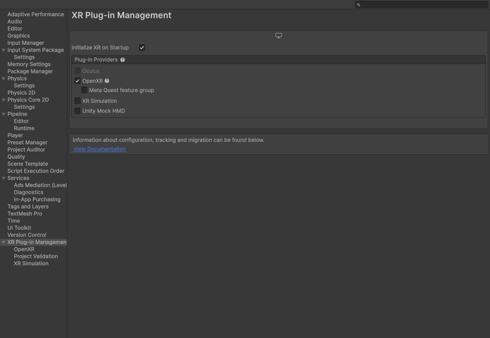
Figure 5.1 – XR Plug-in Management (Windows tab) after the fix: OpenXR is the active plug-in provider and Initialize XR on Startup is enabled.QQMK0078QQ
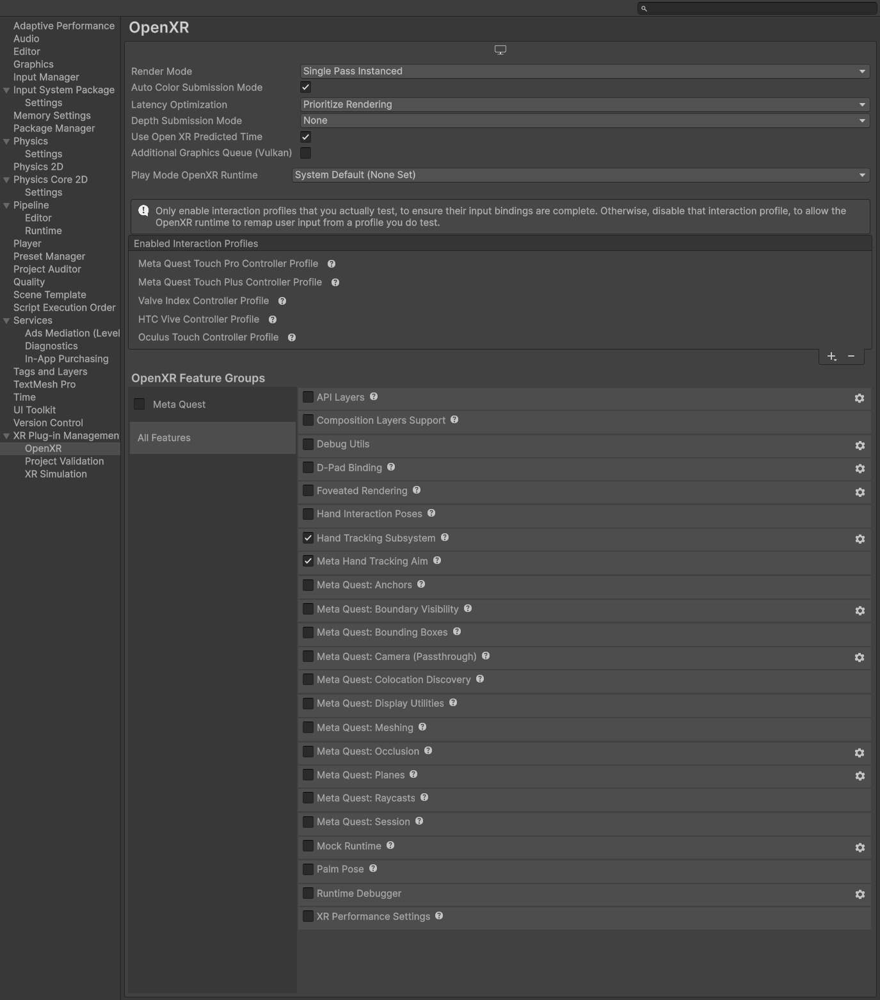
Figure 5.2 – OpenXR settings: single-pass instanced rendering, five interaction profiles, Hand Tracking Subsystem and Meta Hand Tracking Aim.QQMK0079QQ
Table 5.1 – OpenXR features enabled for the Windows (Standalone) targetQQMK0080QQ
Feature
Purpose in NEON BREACH
Oculus Touch Controller Profile
Bindings for Quest 2/3 and Rift Touch controllers (triggers, grips, A/B/X/Y, sticks, menu)
Meta Quest Touch Plus / Touch Pro Controller Profiles
Bindings for the Quest 3 and Quest Pro controllers
Valve Index Controller Profile
Bindings for Index ("Knuckles") controllers through SteamVR
HTC Vive Controller Profile
Bindings for Vive wands (trackpad mapped to primary2DAxis)
Hand Tracking Subsystem (XR Hands)
Enables XR_EXT_hand_tracking; provides the 26-joint skeletons read by HandTracking.cs
Meta Hand Tracking Aim
Meta's aim pose and pinch data for hands on Quest
For the Android (Quest) target the same tool also enables Meta Quest Support, Meta Quest: Session and Meta Quest: Camera (Passthrough). These Android features only appear once the Android Build Support module is installed, which is not the case on the development PC (Section 2.7). The Android loader is already assigned, so installing the module and re-running the tool completes the Quest set-up.
Figure 5.3 – XR Plug-in Management → Project Validation after the fixes: Issues (0) of Checks (12). Before the fix it reported that Run In Background must be enabled to avoid head-locked rendering when focus is lost.QQMK0081QQ
5.3 Runtime XR Detection and Desktop FallbackQQMK0082QQ
The same scene serves desktop and VR. VRRig decides at runtime whether a headset is present by asking the XR input API for a valid device at the Head node (InputDevices.GetDeviceAtXRNode(XRNode.Head).isValid).
When Active is false, the rig hides its hands and stays idle, and the player uses the desktop camera and HUD. When it becomes true, the camera follows the tracked head, both hands appear, the HUD is replaced by world-space menus and the wrist display, and VR-incompatible effects (camera shake, recoil kick, head bob, FOV changes) are disabled; the desktop mirror then shows the VR-only Mixed Reality Passthrough option and the message "VR headset detected". On the desktop the player camera bobs, leans, recoils and changes its field of view; in VR it takes its pose from the tracked CenterEye, renders single-pass instanced stereo and never moves on its own. The parachute's third-person chase camera becomes first person in VR, and the archery zoom is disabled because a headset's field of view is fixed by its lenses.
5.4 VR Rig ConstructionQQMK0083QQ
The rig is generated in code when the player spawns (VRRig.Start and MakeHand). Both hands are children of the CameraPivot, which represents the origin of the tracking space, so their local positions can be set directly from tracked poses. Each hand has a small controller shell and a coloured glow (cyan right, magenta left). The left hand carries the WristDisplay text; the right hand carries the laser sight and, at runtime, the weapon holder. The rig also adds the HandTracking and VRMenu components and creates the ComfortVignette quad in front of the camera.
5.5 Controller Integration and Input MappingQQMK0084QQ
VRRig.Read (Listing 5.1) is called by PlayerController every frame and translates controller state into the shared PlayerInputState. Devices are looked up by role (XRNode.LeftHand, XRNode.RightHand) and read through generic CommonUsages, so the same code works with every enabled interaction profile. Edge detection (trigR && !pTrigR) converts held buttons into single-frame "pressed" events. A dead-zone of 0.18 on the thumbsticks filters drift.
Listing 5.1 – VRRig.Read (abridged) – translating XR controllers into the shared input state (Assets/Scripts/VR/VRRig.cs, lines 200-204,238-243,249-262)QQMK0085QQ
Table 5.2 – XR controller mapping (CommonUsages to game actions)QQMK0086QQ
Controller
CommonUsage
Game action (shooter)
Archery / parachute
Right
triggerButton
Fire (held) / fire pressed; VR menu click
Draw and release / flare
Right
gripButton
Reload
Ripcord
Right
primaryButton (A)
Jump; menu click
Jump / open canopy
Right
secondaryButton (B)
Next weapon
–
Right
primary2DAxis (stick)
Snap or smooth turn; pull back to crouch
Turn
Right
primary2DAxisClick
Dash
–
Left
primary2DAxis (stick)
Locomotion (disabled in MR)
Track / steer
Left
triggerButton
Throw grenade; also zoomHeld
Zoom / slow down
Left
gripButton
Melee
–
Left
primaryButton (X) / secondaryButton (Y)
Flashlight / medkit
–
Left
primary2DAxisClick, menuButton
Sprint; pause / VR menu
Speed up; pause
5.6 Hand Tracking with XR HandsQQMK0087QQ
When no controller is held, hands can play the game. HandTracking (Listing 5.2) locates a running XRHandSubsystem once per second until one appears, then reads eight joints per hand every frame: the thumb, index, middle, ring and little fingertips, the palm, the wrist and the middle proximal knuckle. Two gestures are recognised from joint distances:
Pinch (thumb tip to index tip): starts below 2.0 cm and ends above 3.5 cm. This hysteresis prevents tracking jitter from producing double shots.
Open palm: every fingertip more than 6–8 cm from the palm and the thumb spread more than 6 cm, held for 0.4 s, latched so that it fires once per opening.
The right hand's aim pose is computed from the wrist-to-knuckle vector, so the weapon follows the back of the hand. Right pinch fires and also clicks VR menus, right palm reloads, left pinch throws a grenade and left palm uses a medkit. VRRig.Read applies a hand's gestures only when no controller is held in that hand.
Listing 5.2 – HandTracking.UpdateHand (core) – pinch hysteresis, open-palm detection and the aim pose (Assets/Scripts/VR/HandTracking.cs, lines 102-118)QQMK0088QQ
// pinch with hysteresis
st.pinchDistance = Vector3.Distance(thumb, index);
st.pinch = wasPinch ? st.pinchDistance < 0.035f : st.pinchDistance < 0.02f;
st.pinchDown = st.pinch && !wasPinch;
st.pinchUp = !st.pinch && wasPinch;
// open palm: every fingertip extended away from the palm and the thumb spread
st.palmOpen = Vector3.Distance(index, palm) > 0.075f && Vector3.Distance(middle, palm) > 0.08f &&
Vector3.Distance(ring, palm) > 0.075f && Vector3.Distance(little, palm) > 0.06f &&
st.pinchDistance > 0.06f;
st.palmOpenTime = st.palmOpen ? st.palmOpenTime + Time.unscaledDeltaTime : 0f;
st.Latch(st.palmOpen);
// aim pose: along the back of the hand, from the wrist towards the middle knuckle
Vector3 fwd = knuckle - wrist;
if (fwd.sqrMagnitude < 0.000001f) fwd = Vector3.forward;
st.aim = new Pose(Vector3.Lerp(palm, knuckle, 0.5f), Quaternion.LookRotation(fwd.normalized, Vector3.up));
5.7 Field-of-View GuardQQMK0089QQ
The audit found that several code paths still assigned Camera.fieldOfView while a headset was rendering, which made Unity log a warning on every mode switch in VR. All such writes now go through a guard (Listing 5.3). The fix was verified both ways: in VR, switching between Archery, Parachute and Shooter produced no warnings; on the desktop, sprinting still widens the FOV from 87.4° to 94.4°.
Listing 5.3 – Util.SetFov – the guard added during the audit (Assets/Scripts/Core/Util.cs, lines 8-15)QQMK0090QQ
/// <summary>/// Set a camera's field of view, except while an XR headset renders it in stereo: the lens fixes the FOV there/// and Unity warns "Cannot set field of view on camera ... while VR is enabled"./// </summary>
public static void SetFov(Camera cam, float fov)
{
if (cam != null && !cam.stereoEnabled) cam.fieldOfView = fov;
}
5.8 Mixed-Reality Implementation (AR Foundation)QQMK0091QQ
MR mode is enabled from the VR menu (MIXED REALITY: ON) and applied by ArenaManager.Prepare when a mission starts. MixedReality.Enable performs five steps:
Disables every renderer and collider of the virtual arena; keeps its lights (with shadows off) so that enemies stay lit, and turns fog off.
Builds the room from the tracked boundary: an invisible floor, invisible walls along every boundary edge and 12 spawn points along the perimeter (Chapter 6).
Sets the camera to clear with transparent black (0,0,0,0) so that the compositor shows the passthrough feed behind the rendered content.
Adds an AR Foundation ARCameraManager to the camera and creates an ARSession; on Quest, Unity's Meta OpenXR package uses them to enable passthrough.
Locks artificial locomotion and turning (VRRig.Read checks MixedReality.Active), so the virtual and real rooms stay aligned.
5.9 Haptic FeedbackQQMK0092QQ
Haptics sends impulses through InputDevice.SendHapticImpulse after checking HapticCapabilities.supportsImpulse, which works with any OpenXR controller; gamepads get matching low/high-frequency rumble. Amplitude and duration are derived from game data. A shot pulses the gun hand with a strength that grows with the weapon's recoil; damage pulses both hands in proportion to the damage; explosions rumble according to their distance.
5.10 World-Space VR User InterfaceQQMK0093QQ
Screen-space overlays do not work in a headset, so the VR interface consists of world-space objects. VRMenuDriver decides which page to show for the current game state: main, pause, shop, game over, comfort and controls, switch mode, or leaderboard. VRMenu places the panel 1.6 m in front of the head, 0.1 m below eye height, and selects rows with a ray from the right hand. A LineRenderer draws the ray and a cursor marks the hit point; the hovered row is highlighted; the right trigger, the A button or a right-hand pinch clicks; and every click sends a short haptic pulse. During play, a TextMesh on the left wrist shows health, shield, weapon and ammunition, wave and score. Each mini-game can override this text (the archery round and wind, the parachute altitude and distance to the pad).
5.11 Desktop and Gamepad Input (Input System)QQMK0094QQ
DesktopInput compiles against both of Unity's input back-ends and addresses keys with KeyCode, so rebinding is stored independently of the back-end. With the Input System package (the project's setting), each KeyCode is translated to an Input System Key. The audit found that the translation assumed contiguous digit keys. In the Input System enum, Digit0 comes afterDigit9 (Digit1 = 41 … Digit9 = 49, Digit0 = 50), so keys 1/2/3 were read as Left Shift, Right Shift and Left Alt. The corrected mapping is shown in Listing 5.4.
Listing 5.4 – DesktopInput.ToKey after the fix (Assets/Scripts/Player/DesktopInput.cs, lines 23-31)QQMK0095QQ
static Key ToKey(KeyCode kc)
{
Key k;
if (keyMap.TryGetValue(kc, out k)) return k;
k = Key.None;
// the Input System's Key enum orders the digits 1..9 then 0 (Digit0 comes after Digit9)
if (kc == KeyCode.Alpha0) k = Key.Digit0;
else if (kc >= KeyCode.Alpha1 && kc <= KeyCode.Alpha9) k = Key.Digit1 + (kc - KeyCode.Alpha1);
else if (kc >= KeyCode.Keypad0 && kc <= KeyCode.Keypad9) k = Key.Numpad0 + (kc - KeyCode.Keypad0);
5.12 End-to-End VR Verification with the OpenXR Mock RuntimeQQMK0096QQ
No physical headset was available during the ESE preparation. Rather than leave the VR code compile-checked only, the team verified it with the OpenXR Mock Runtime, a simulated OpenXR runtime that ships with Unity's OpenXR plug-in [13]. It runs the real OpenXR loader, session and action system without hardware. Together with the conformance-automation extension (XR_EXT_conformance_automation), test code can set controller poses and button states inside the runtime. Those values then reach the game through exactly the same path a real headset uses: the OpenXR action system, Unity's XR input subsystem, InputDevices, and finally VRRig.
5.12.1 Method
Temporarily enabled the Mock Runtime, Conformance Automation and Khronos Simple Controller features for Standalone, and entered Play mode in the NeonBreach scene.
Confirmed that the OpenXR session reached the Focused state and that Unity reported a head device and left and right controllers.
Set the head pose with MockRuntime.SetSpace(View, …) and the controller grip and aim poses with ConformanceAutomationSetPose; pressed buttons with ConformanceAutomationSetBool, SetFloat and SetVec2.
Subscribed to MockRuntime.onScriptEvent to count the haptic impulses that the game sent to the runtime.
Rendered the tracked camera view to 1600×900 images and read back game state with the Unity CLI.
Disabled the three test features again afterwards, so the shipped configuration contains only the 7 production features.
These steps were driven from the command line through the Unity CLI's script eval, not added to the game code (Table 5.3).
Table 5.3 – Calls used in the OpenXR Mock Runtime verificationQQMK0097QQ
Purpose
API (OpenXR Plugin test features)
Simulated device
Mock Runtime, Conformance Automation and Khronos Simple Controller features enabled for Standalone (disabled again afterwards)
Handler on MockRuntime.onScriptEvent; VRRig.HeadsetPresent, GameManager.VrActive, InputDevices poses
5.12.2 Results
Table 5.4 – Results of the OpenXR Mock Runtime verification (22 Nov 2026)QQMK0098QQ
#
Check
Observed result
Status
1
OpenXR session and devices
Loader OpenXRLoader; session state Focused; devices "Head Tracking – OpenXR" [HeadMounted, TrackedDevice] and left/right controllers (the Mock Runtime emulates the first bound profile, HTC Vive)
VRRig.HeadsetPresent = true, GameManager.VrActive = true; desktop menu shows the MR toggle
Pass
4
Pose registration
Right grip set to (0.20, −0.35, 0.35) m in tracking space → read back exactly by InputDevices → RightHand world position (0.20, 1.30, 0.35) m (Chapter 6)
Pass
5
VR menu pointer
Hand ray hit row 0 "SHOOTER: START MISSION" (hover = 0); the trigger click started the mission (state Playing)
Pass
6
Firing with the tracked weapon
4 trigger presses aimed at the nearest enemy: 5 shots fired, 3 hits, 1 kill, score 100; the wrist display updated (ammo 7 → 6)
Pass
7
Haptics
The runtime received 2 impulses for the menu click, 6 after the shots, and 78 after the archery draw and release
Pass
8
Locomotion + comfort vignette
Left stick forward: speed 4.13 m/s, moved 7.17 m, vignette visible with amount 0.64; after release, amount returned to 0
Pass
9
Snap turn
Right stick fully deflected: body yaw changed by 45° (0° → 315°) in one step
Pass
10
Mixed-reality mode
Toggled with the VR pointer; MixedReality.Active = true; clear flags SolidColor with alpha 0; fog off; room 3.50 × 3.50 m (fallback, as the Mock Runtime provides no boundary); 4 walls; 12 spawn points; NavMesh rebuilt; enemy spawned inside the room
Pass (logic)
11
VR archery
The bow follows the tracked right hand; the trigger drew it to 91 %; release hit the 20 m target for +10; the wrist display showed the round, arrows and wind
Pass
12
VR parachute
First-person plane-door view, world-space "SKYDIVE" banner, wrist altimeter (ALT 2,999 m, PAD 1,192 m, RINGS 0/12)
Pass
13
Mode switching in VR
Shooter → Archery → Parachute → Shooter with VR active: 0 warnings and 0 errors in the console (after the FOV fix)
Pass
14
Hand tracking
No XRHandSubsystem is created by the Mock Runtime (it has no hand-tracking extension); gesture code is not exercised
Needs hardware
15
Passthrough camera feed
ARSession.state = None: the Mock Runtime has no camera; the passthrough image needs a Quest
Needs hardware
(a) World-space main menu, hand ray on "SHOOTER: START MISSION"(b) Pistol in the tracked right hand, laser sight on an enemy, wrist display
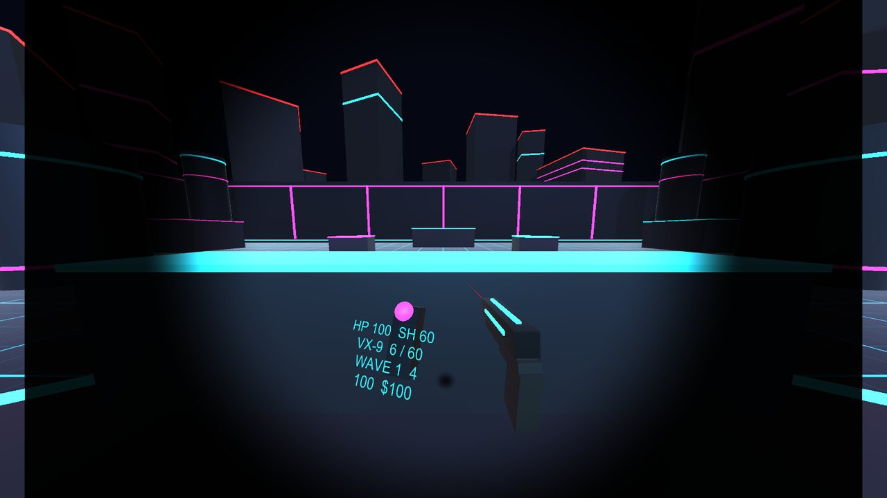
(c) Stick locomotion at 4.13 m/s with the tunnelling vignette
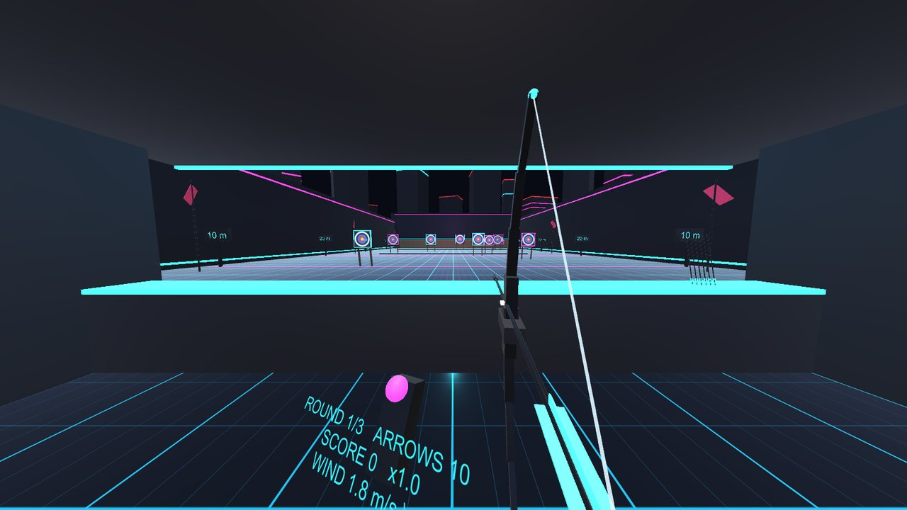
(d) VR archery: bow at full draw in the tracked hand, wrist shows round, arrows and wind(e) MR mode: arena hidden, camera clears to transparent black (passthrough on a Quest); an enemy inside the registered room(f) After a 45° snap turn: enemies that were to the side are now ahead
Figure 5.4 – Frames rendered from the tracked head pose during the Mock Runtime session. All content, poses and interactions are the real game responding to OpenXR input; the only simulated part is the device itself.QQMK0099QQ
What this verification does and does not prove. It proves that the XR configuration is valid, that the OpenXR session starts, that tracked poses and controller input flow through the action system into gameplay, and that the VR rig, menus, comfort features, haptics, MR registration logic and all three modes work in VR. It cannot measure on-device frame rate, lens distortion, real tracking quality, hand-tracking gestures or the passthrough image; those remain hardware tests (Chapter 10).
Rubric – Excellent: Accurate, stable and robust tracking/spatial understanding.
Evidence in this chapter
The tracking pipeline from the OpenXR runtime to Unity transforms (Figure 6.1) and the handedness conversion used by the OpenXR plug-in (Eq. 6.1).
The registration chain written as an equation (6.2) and checked numerically with measured poses (Table 6.1).
Height calibration, room-scale head following and snap turns about the head, with the source and the geometry.
Mixed-reality spatial understanding: the boundary polygon becomes walls, spawn points and a NavMesh (Figure 6.2).
Collision detection: physics layers, the collision matrix and every spatial query the game performs (Table 6.2, Table 6.3).
6.1 Tracking PipelineQQMK0101QQ
NEON BREACH tracks three body parts in VR: the head (centre eye) and the left and right hands. Each hand is tracked either as a controller or as an articulated hand skeleton. The headset's tracking system estimates poses in its own tracking space. OpenXR reports them relative to the application's reference space, Unity converts them into its coordinate system, and the game maps them into the virtual world (Figure 6.1).
flowchart LR
S["Headset sensors cameras + IMU (inside-out SLAM/VIO)"] --> RT["OpenXR runtime poses in STAGE / LOCAL space right-handed, -Z forward"]
RT --> UX["Unity XR input subsystem converts to left-handed, +Z forward"]
UX --> ID["InputDevices devicePosition, deviceRotation, isTracked (Head, LeftHand, RightHand)"]
UX --> XH["XRHandSubsystem 26 joint poses per hand"]
ID --> TR["VRRig.Track() + height offset"]
XH --> HT["HandTracking aim pose, gestures"]
TR --> TF["Transforms under CameraPivot Main Camera, RightHand, LeftHand"]
HT --> TF
TF --> W["World space via Player and CameraPivot"]
Figure 6.1 – Tracking pipeline: from sensor data to the poses of the camera and hands in the game world.QQMK0102QQ
6.2 Coordinate Systems and HandednessQQMK0103QQ
OpenXR uses a right-handed coordinate system with +X right, +Y up and −Z forward. Unity uses a left-handed system with +X right, +Y up and +Z forward. Converting between them mirrors the Z axis. For positions this negates z; for rotation quaternions, mirroring one axis negates the quaternion components of the two other axes:
pU = (x, y, −z) qU = (−qx, −qy, qz, qw)(6.1)The mapping is its own inverse, so the same formula converts Unity to OpenXR. Unity's OpenXR plug-in applies it in the XrVector3f and XrQuaternionf constructors.
This convention mattered in practice. During verification, a 15° downward head pitch was first converted by hand with Eq. 6.1 before it was passed to the Mock Runtime's raw SetSpace call. Unity reported it back as 345°, a 15° upward pitch, which showed that the call already performs the conversion, so it had been applied twice. Passing the Unity-space rotation directly gave exactly 15.0°. The conformance-automation API also converts internally, and the right-hand pose set through it was read back unchanged (Section 5.12).
6.2.1 Tracking origin modes
OpenXR offers a LOCAL space (origin at the initial head pose; Unity's Device mode) and a STAGE space (origin on the floor at the centre of the play area; Unity's Floor mode). With Floor origin a standing user's head is reported at about 1.6–1.8 m; with Device origin it is near 0. The rig handles both with the height calibration in Section 6.4. During verification the input subsystem reported origin mode Floor.
6.3 Transform Hierarchy and the Registration ChainQQMK0104QQ
Registration means placing tracked objects at the correct place in the virtual world. NEON BREACH registers the tracking space to the world through a fixed chain of transforms (Figure 4.6):
xworld = TPlayer(p, ψ) · TCameraPivot(o) · ( xtrack + h ŷ )(6.2)TPlayer: the player's world position p and yaw ψ (moved by locomotion, snap turns and the CharacterController); TCameraPivot: the tracking-space origin o inside the player (shifted by room-scale compensation); xtrack: the device pose reported by OpenXR; h: the calibrated height offset; ŷ: the up vector.
The chain was checked with known inputs during the Mock Runtime session. The Player object stood at (0, 0.05, 0) (its saved position in the scene), the head was reported at the tracking-space origin, and the first calibration therefore chose h = 1.6 m. Table 6.1 compares the values predicted by Equation 6.2 with the values the game produced.
Table 6.1 – Registration check: injected tracking-space poses, predicted and measured world positionsQQMK0105QQ
A tracking-space height of zero means different things on different runtimes, and seated players need their view lifted to standing height so that cover and enemies line up. On the first valid head sample after start-up, after a recenter, or after the Seated option changes, VRRig.Track computes the offset h:
h = max(0, 1.62 − yhead) (seated) h = 1.6 if yhead < 0.7 m, otherwise 0 (standing)(6.3)The standing rule detects device-relative tracking (head near zero) and lifts it to a typical eye height; a floor-relative headset is left unchanged. Recenter clears the calibration and re-centres the player under the head.
6.5 Room-Scale Head FollowingQQMK0107QQ
When the player physically walks, the head moves away from the body collider. If nothing corrected this, enemies would aim at the wrong place and walls would not stop the player. PlayerController.FollowHead moves the CharacterController towards the head's horizontal position through CharacterController.Move, which respects walls, and shifts the camera pivot back by the distance actually moved, so that the camera does not jump.
Δ = projXZ(pcamera − pbody), m = CC.Move(Δ), o ← o − projXZ(m)(6.4)If |Δ| < 2 cm nothing happens, which filters out head sway. If a wall blocks the move, m is shorter than Δ, and the body stays at the wall.
6.6 Turning about the HeadQQMK0108QQ
A snap or smooth turn rotates the player object about its own origin. In room-scale play the head is usually not above that origin, so rotating the body would swing the view sideways. That is disorienting and a known sickness trigger. The rig measures the head's horizontal displacement caused by the rotation and cancels it by moving the pivot (PlayerController.DoLook), so the rotation happens about the head:
d = projXZ( Ry(Δψ) r − r ), o ← o − d(6.5)r: the vector from the body origin to the head; Δψ: the turn angle (45° by default for snap turns). The Mock Runtime test showed a single 45° step (0° → 315°).
6.7 Hand Pose and Gesture GeometryQQMK0109QQ
For controller-free play, HandTracking derives an aim pose and two gestures from the joint positions (Listing 5.2, Chapter 5). An open palm requires the index, middle, ring and little fingertips to be more than 7.5, 8, 7.5 and 6 cm from the palm joint and the thumb to be spread more than 6 cm, held for 0.4 s; the aim pose sits between the palm and the middle knuckle and looks along the wrist-to-knuckle vector. The pinch has two thresholds (hysteresis), so a pinch is a small state machine: it starts below 2.0 cm and ends only above 3.5 cm. Fluctuations between the two thresholds therefore cannot produce repeated clicks.
6.8 Mixed Reality: Spatial Understanding of the RoomQQMK0110QQ
In MR mode the virtual enemies must move inside the user's real room. The game builds its spatial model of the room from the play-area boundary that the user drew during headset set-up. RoomPolygon queries every running XRInputSubsystem for TryGetBoundaryPoints. If a polygon with at least three points is returned, it is used (UsedRealBoundary = true); otherwise a 3.5 × 3.5 m square is used as a fallback. MixedReality.BuildRoom then:
computes the centroid c of the polygon;
adds an invisible floor collider (40 × 1 × 40 m, top at y = 0) on the Environment layer;
for every edge from a to b of length L ≥ 5 cm, adds an invisible wall collider (0.3 × 3 × (L + 0.3) m) at the edge midpoint, pushed 0.15 m outward along normalise(mid − c) and oriented along the edge;
places N = 12 spawn points at equal arc-length intervals dk = P·k/N around the perimeter P, each pulled towards the centroid by min(0.5 m, 0.4·|c − p|);
marks the NavMesh as stale, so that ArenaManager rebuilds it from the new colliders and enemies plan paths inside the real room.
Figure 6.2 – The room model produced by BuildRoom for the 3.5 × 3.5 m fallback room recorded during verification, computed with the same algorithm: boundary (dashed), wall colliders (grey) and spawn points 0–11 (magenta). On a Quest the user's own boundary polygon replaces the square.QQMK0111QQ
Measured outcome. In the Mock Runtime session the MR mode produced RoomSize = (3.50, 3.50), 4 wall colliders, 12 spawn points and a rebuilt NavMesh, and the first enemy spawned 2.5 m from the player inside the room (Figure 5.4 (e)). The Mock Runtime provides no boundary, so the fallback path was exercised. The real-boundary path uses the same code with the polygon from the headset.
6.9 Collision Detection and Physics LayersQQMK0112QQ
Every body that moves under player or AI control uses a Unity CharacterController capsule (the player: radius 0.35 m, height 1.8 m; enemies: per type, e.g. a grunt has radius 0.4 m and height 1.5 m), whose move-and-slide resolves collisions against static geometry. Gameplay queries use explicit raycasts with layer masks. Table 6.2 lists the layers; Layers.SetupCollisionMatrix applies the collision matrix at start-up (for example FX debris never collides with actors, and enemy heads collide only with weapon raycasts).
Table 6.2 – Physics layersQQMK0113QQ
Layer
Name
Contents and purpose
5
UI
VR menu rows (hit by the hand ray only)
8
Player
Player CharacterControllers
9
Enemy
Enemy bodies
10
Environment
Arena, range and island geometry; MR floor and walls; the source of the NavMesh
11
FX
Debris and grenades (never collide with actors or other FX)
12
EnemyHead
Head hit boxes (trigger-like: hit only by weapon raycasts)
13 / 14
P1Body / P2Body
Visible player bodies, each hidden from its own camera in split screen
Table 6.3 – Spatial queries used by the gameQQMK0114QQ
Query
Call and mask
Spatial reasoning performed
Hitscan weapons
Physics.Raycast, ShootMask, range 45–160 m
One ray per pellet inside a cone of half-angle σ (Eq. 6.6); the first hit decides; HitZone multipliers give headshots ×2.4 (most enemies), ×1.8 (tank, drone) or ×1.6 (boss); damage falls off linearly with distance
VR laser sight
Raycast, ShootMask, 30 m
Ends the visible laser at the first surface
VR menu pointer
Raycast, UI layer, 6 m
Selects the menu row under the hand ray
Arrow flight
Up to 8 sub-stepped raycasts per frame, Environment
A swept path (segments of at most 0.75 m) so fast arrows never pass through thin targets; arrows stick at the hit point
Enemy line of sight
Physics.Linecast, EnvMask
Decides whether a gunner fires or flanks, and whether a sniper's perch is valid
Navigation
NavMesh.SamplePosition, CalculatePath
Projects positions onto the NavMesh and plans a corner path, re-planned every 0.3–0.5 s
Parachute altitude
Downward Raycast, 8,000 m, EnvMask
Altitude above ground (AGL) for the deploy window, auto-deploy, flare prompt and landing
Farm Sniper bullets
Swept raycasts per frame
820 m/s bullets with gravity drop and travel time
d = normalise( f + rxright + ryup ), (rx, ry) ~ U(unit disc) · tan σ(6.6)σ is interpolated between the hip spread and the ADS spread by the aim amount (e.g. 2.6° → 0.45° for the rifle) and multiplied by the player's movement state. Each of the scatter cannon's 9 pellets draws its own direction.
NEON BREACH contains no imported 3D models, textures or audio files. A search of the Assets folder finds no FBX, OBJ, Blend, WAV, MP3 or OGG files. All visual and audio content is generated by C# code, either at runtime when a mode starts or by editor builders that run the same code and save the result as Unity assets (Table 7.1). This approach has four benefits for an XR project: no licensing questions, a small repository, worlds that can be rebuilt or swapped at runtime (which MR mode needs) and complete control over polygon counts.
Table 7.1 – Asset inventory of the project and how each asset type is producedQQMK0119QQ
Saved by builders from the cached generators (Mats, RatMats, FarmMats): 17 shared, 78 Rat Shooter, 54 Farm Sniper
Textures (.png)
51
Drawn into Texture2D by ProcTex, CartoonTex and FarmTextures and saved by the builders (neon grid, ground, bark, crops, labels, UI icons); the intro's 12 textures (IntroArt) are generated at start-up and never saved
Mesh / NavMesh assets
4
RatMeshes.asset (19.8 MB) and FarmMeshes.asset (5.1 MB) hold generated meshes; two baked NavMeshes for mice and rats
Prefabs
6
Five cartoon-mouse variants and the cartoon rifle, saved by RatShooterSceneBuilder
Scenes
3
Built and saved by SceneBuilder, FarmSceneBuilder and RatShooterSceneBuilder
Sounds and music
–
Synthesised into AudioClips at start-up by AudioSynth, RatSynth, FarmAudioSynth and IntroAudio (gunshots, explosions, footsteps, wind, birds, music loops, the intro's score and theatre ambience)
7.2 Neon Arenas (Shooter)QQMK0120QQ
The two shooter arenas are built by WorldBuilder and ArenaManager from primitives with emissive neon trims. Neon Grid is an open square arena with a central raised platform, pillars, crates of varying height as cover, corner towers and a city skyline beyond the walls. Foundry is a long industrial hall with a raised platform, ramps, lanes and furnaces. The layout gives every enemy type a role: pillars break the sniper's line of sight, crates force gunners to flank, and the platform rewards high ground. All cover geometry is on the Environment layer, so the runtime NavMesh is built from it automatically.
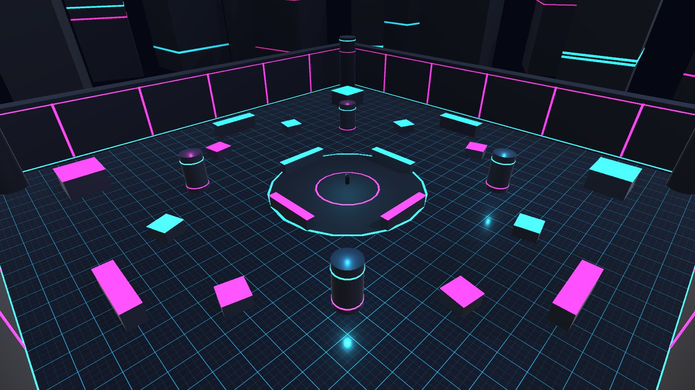
Figure 7.1 – Neon Grid arena rendered from the saved scene (Editor).QQMK0121QQFigure 7.2 – Plan view: central platform, symmetric cover, pillars and corner towers.QQMK0122QQFigure 7.3 – Foundry arena in play.QQMK0123QQ
7.3 CharactersQQMK0124QQ
All characters are built from primitives in code. The humanoid enemies (grunt, gunner, sniper, shield tank and the boss) are boxes with a sphere head, a glowing visor and an emissive chest panel in a colour per type; the drone is a flying sphere with a glowing eye, ring, pods and fin; the tank carries a translucent energy shield. The skydiver (SkydiverRig) adds limbs, a jumpsuit and a canopy; the five cartoon mice are rounded lathes, tubes and boxes with whiskers, ears and a 12-segment tail; the farm rats are low-poly and the farmer wears a hat and a flannel shirt. Their animation is procedural (Section 7.9).
Figure 7.4 – Shield Tank and its energy shieldQQMK0125QQ
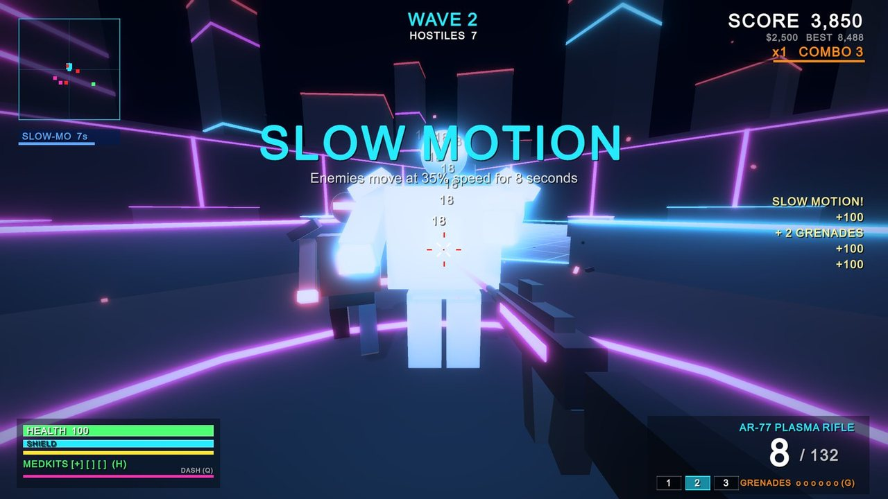
Figure 7.5 – Primitive-built enemies flashing white on hit during the slow-motion power-upQQMK0126QQFigure 7.6 – Cartoon mouse knocked out by a headshotQQMK0127QQ
7.4 Weapons and ToolsQQMK0128QQ
Table 7.2 – Weapon models and their statistics (from WeaponLibrary)QQMK0129QQ
Weapon
Damage
Rate (/s)
Magazine
Reload (s)
Spread hip / ADS (°)
Range (m)
Notes
VX-9 Pulse Pistol
26
5.5
12
1.15
1.2 / 0.15
140
Semi-automatic
AR-77 Plasma Rifle
16
11
30
1.9
2.6 / 0.45
160
Fully automatic
SG-12 Scatter Cannon
11 × 9
1.3
6
0.45 / shell
5.2 / 3.4
45
9 pellets, shell-by-shell reload
The bow (archery) has a string that bends with the draw amount and a nocked arrow. The Rat Shooter's cartoon rifle has gloved hands, flannel sleeves, an animated magazine and bolt, and ejects casings. The Farm Sniper's bolt-action rifle has a working scope; in VR it renders the magnified view to a render texture on the scope lens.
7.5 EnvironmentsQQMK0130QQ
7.5.1 Archery range
A covered booth faces a lane with nine targets: four static targets at 10, 20, 30 and 40 m, three pop-up targets at 15, 25 and 35 m, and two rail targets at 23 m (2.4 m/s) and 37 m (3.2 m/s). Target face radii grow with distance (0.50–1.00 m). Distance signs, glowing lane lines and wind flags that show the current wind complete the range (Figure 7.7).
Figure 7.7 – Archery range: booth, distance signs, targets and wind flags.QQMK0131QQFigure 7.8 – Zoomed view of the 20 m target in round 3 (wind 6.6 m/s).QQMK0132QQ
7.5.2 Parachute island
The island is a 200 × 200 height-field mesh covering 2.8 × 2.8 km. Its height function combines a fractal Brownian-motion noise, a radial island mask with an angular wobble, and a Gaussian mountain:
d = (r / 950)·[1 + 0.12 sin 3φ + 0.07 sin 5φ + 0.3(Nlow − 0.5)], land = 1 − smoothstep(0.6, 1.0, d)(7.2)
H(x,z) = lerp(−35, 16 + 60·fbm² + 150·e−|(x,z) − m|²/(2·170²), land) − 4(7.3)N is Unity's Perlin noise; r and φ are the polar coordinates of (x, z); m = (−220, 160) is the mountain centre. Within 8–70 m of the landing pad the height blends smoothly to the pad height, so the pad is flat.
A colour map shades beach, grass, rock and snow by height and slope. Then 230 trees are placed in noise-masked forests ("forests, not a carpet"), a 15 m landing pad with a light beacon, 12 rings, coins, drifting balloons and bird flocks are added, together with an ocean plane, clouds and a 32 × 16 segment sky dome. Fog and the sky gradient change with altitude (Figure 7.9).
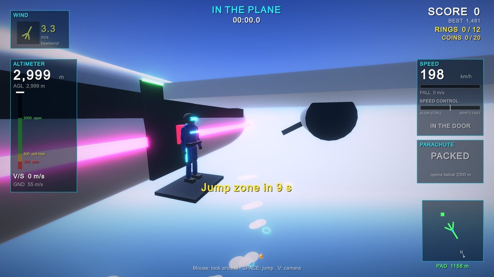
From the plane at 3,000 mLanding pad and beaconTerrain, trees and canopy at landing
Figure 7.9 – The procedurally generated parachute world at three altitudes.QQMK0133QQ
7.5.3 Rat Shooter farmyard
RatWorldBuilder generates a sunny cartoon farmyard around the porch the player shoots from: rolling hills, a fenced yard with a dirt path, a red barn, a silo, a windpump, trees, a vegetable garden with a scarecrow, corn and pumpkin patches, hay bales, barrels, crates, a trough, a wheelbarrow, sacks, a log pile, a well, bushes, rocks, sunflowers, mouse burrows and bait food. Grass and flowers are grown at load by GrassPlanter, and clouds and butterflies drift through the scene (Figure 7.10).
7.5.4 Farm Sniper farm
FarmWorldBuilder creates rolling terrain with a pond, corn, wheat, cabbage and pumpkin fields, a vegetable garden, a farmhouse, a barn, a silo, a watchtower, a chicken coop, a well, a windmill, fences, trees, an orchard, hay bales, a tractor and power poles. Crops and grass are grown from a seed when the scene loads (VegetationPlanter) rather than being saved, which keeps the scene file small (Figure 7.11).
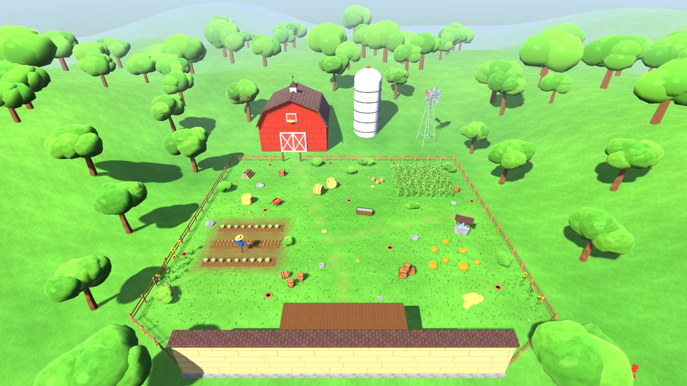
Figure 7.10 – Rat Shooter farmyard rendered from the saved scene (Editor).QQMK0134QQ
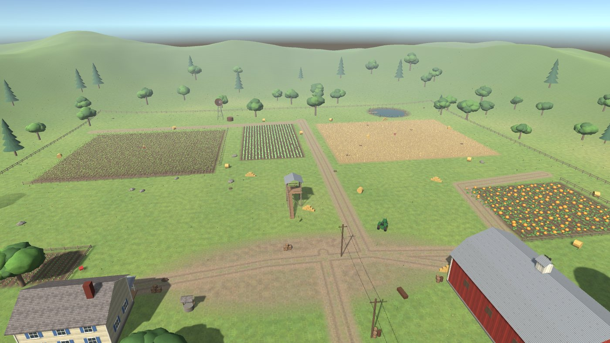
Figure 7.11 – Farm Sniper level (Editor render; crops are planted at runtime).QQMK0135QQ
7.5.5 Cinematic intro stage
The startup intro (Chapter 8) is built from the same kind of procedural assets. IntroArt draws twelve textures at start-up: a velvet curtain cloth (1024×256 with mip-maps) whose folds are a warped sum of sines, shaded with ambient occlusion in the valleys and a velvet sheen on the turning flanks (proportional to (1 − facing)1.7), with a neon piping strip baked into the last 5 % of the texture; a tiling valance with scalloped swags and a glowing edge; a perspective neon floor grid whose lines are antialiased by their projected pixel distance; a volumetric spotlight cone; soft glows; a vignette; and film grain. Each curtain is not a picture but a deformable cloth mesh (IntroCurtain, 43×15 vertices): the outer edge stays on the track while the leading edge travels, so the folds bunch up as the curtain opens, and stage lighting (a centre spotlight and magenta footlights) is computed per vertex from the screen position, so the folds move through the light. The neon piping keeps a fixed width however much the cloth is compressed (Figure 8.1 in Chapter 8).
7.6 Materials, Textures and ShadersQQMK0136QQ
Shared materials (Mats). One material per name, created once and cached, using Unity's Standard shader. Neon materials are emissive (cyan, magenta, red, green, orange, white). Every generated material has enableInstancing = true, and the editor script RenderingSettingsGuard keeps instancing on for all saved materials.
Procedural textures (ProcTex). The neon floor grid, target faces, the island colour map, vignette masks and UI icons are drawn pixel by pixel into Texture2D.
RatShooter/Toon shader. A Built-in pipeline toon shader with a soft lighting ramp (softness and offset parameters), a tinted shadow colour, a crisp highlight, rim lighting, vertex colours used as macro colour and ambient occlusion, real sun shadows, and an optional vertex wind sway for grass, corn and flowers. RatSky draws a gradient sky; RatFX is an unlit effects shader.
NB_Vignette. The comfort vignette, drawn on a quad in front of the camera so that it appears in both eyes.
7.6.1 Post-processing pipeline (NB_PostFX)
Because the project uses the Built-in Render Pipeline, it cannot use URP's post-processing volumes. PostFX instead runs a four-pass shader in OnRenderImage: (0) a bloom prefilter with a soft-knee threshold and a 2× downsample, (1) further downsampling into a mip chain, (2) additive tent upsampling, and (3) a composite pass that applies chromatic aberration (only while damaged), adds the bloom, applies exposure, a highlight-only soft clip, contrast, saturation around Rec. 709 luma, lift/gain split-tone grading, a gameplay tint (cold for slow motion, warm for double damage) and a vignette. The soft clip leaves dark and mid tones unchanged and rolls highlights off smoothly:
SoftClip(x) = min(x, 0.8) + e / (1 + 5e), e = max(x − 0.8, 0)(7.4)Applied per colour channel. A full filmic curve such as ACES would lift the shadows in gamma colour space and wash out the neon look, so the shader rolls off only the HDR highlights.
7.7 LightingQQMK0137QQ
The arenas are lit by a directional key light with soft shadows, coloured point lights at the neon features, and the emissive neon materials themselves, which bloom in post-processing. The parachute world uses a bright sun with altitude-dependent fog. The Rat Shooter uses realtime lighting only (no baking) with warm grading. The Farm Sniper sets a 150 m shadow distance with 4 cascades so that distant rats still receive shadows through the scope. In MR mode the arena's directional light keeps lighting the enemies, with shadows switched off.
7.8 Procedural AnimationQQMK0138QQ
The project has no Animator controllers or animation clips. Every motion is computed in code each frame from game state: enemy gaits from their velocity; weapon recoil, sway, bob, the reload sequence and the ADS transition in the viewmodel; the bow's string bend from the draw amount; the skydiver's limbs from body position and speed control; the canopy's inflation from the deploy progress; and the mice's legs, tail, ears, eyes and poses in MouseRig. Procedural animation keeps animations consistent with physics (a faster mouse scurries faster) and avoids asset files.
7.9 Visual EffectsQQMK0139QQ
Effects are generated in code: muzzle flashes with a 45 ms point light and per-weapon tracers; impact particles and decals aligned to the surface normal (the Rat Shooter varies them across eight surface types); grenade blasts with a light flash and debris; the tank shield's flash and the sniper's 1.4 s laser telegraph; cartoon poofs, X-eyes, dizzy stars and victory confetti; and screen effects – bloom, chromatic aberration on damage, slow-motion and double-damage tints, the VR comfort vignette and the snap-turn blink.
7.10 Asset Integration PipelineQQMK0140QQ
Procedural content is integrated into Unity in two ways. Content that must exist in the saved scene (the shooter arena, the Rat Shooter farmyard and the Farm Sniper farm) is produced by editor builders available under the Neon Breach menu. Each builder runs the generator, bakes the NavMesh, saves the meshes, textures and materials under the game's Generated/ folder and its prefabs under Prefabs/, writes the scene and registers it in Build Settings. Content that changes during play (the archery range, the parachute island, the MR room, enemies and effects) is generated at runtime when a mode starts and destroyed by Teardown when it ends. ProjectBootstrap runs the main builder automatically the first time the project is opened.
7.11 OptimisationQQMK0141QQ
Optimisations were made only when a measurement justified them, using the in-game F4 performance panel, which reads Unity's profiler counters (draw calls, SetPass calls, batches, shadow casters, triangles, main-thread time) through ProfilerRecorder. Table 7.3 lists the changes that were measured with the same camera pose at Ultra quality during development; Table 7.4 gives the statistics measured on 22 Nov 2026 for this report.
Table 7.3 – Measured optimisations (same camera pose, Ultra quality)QQMK0142QQ
Change
Scene
Metric
Before
After
Decision
GPU instancing on all generated materials + no shadows from emissive neon parts
Shooter arena
Shadow casters
277
95
Kept (Mats, Perf.NeonNoShadows)
Shooter arena
Triangles
16.7 k
12.7 k
Archery range
Shadow casters
441
214
Archery range
Draw calls
772
691
Runtime static batching
Shooter arena
Draw calls
321
453
Rejected: batched meshes lose instancing and are still drawn once per light (Perf.BatchingEnabled = false)
Archery range
Draw calls
691
812
Dynamic batching
Arena / parachute
Dynamic batches
0
–
Disabled: it produced no batches, while instancing produced 165 instanced batches (652 draws) in the arena
Other measures already in the code: a pool of 32 audio sources, one cached material and texture per name, a NavMesh built only from colliders on the Environment layer, an IMGUI HUD with no canvases to rebuild, stripping of colliders from decorative primitives (Util.Part) and noise masks that keep vegetation density bounded.
Table 7.4 – Rendering statistics per scene, measured on 22 Nov 2026 (Unity Editor, Play mode, 1920×1080, Ultra quality)QQMK0143QQ
Scene / mode
Draw calls
SetPass
Instanced batches (draws)
Shadow casters
Triangles
Shooter – Neon Grid (combat)
319
307
87 (279)
95
12.7 k
Shooter – Foundry
400
394
107 (386)
160
11.2 k
Archery range
701
684
168 (654)
214
25.1 k
Parachute (in the plane)
266
248
49 (112)
0
207.4 k
Rat Shooter (level 1)
999
369
823 (1,153)
543
1.38 M
Farm Sniper (mission)
932
330
857 (2,099)
751
2.27 M
The shooter arena's figures (95 shadow casters, 12.7 k triangles) reproduce the optimised values exactly. The two cartoon games draw far more triangles because their rounded meshes and planted grass are much denser, but GPU instancing keeps their SetPass calls in the same range as the arenas. Frame times are reported in Chapter 12.
Evaluation Criterion 7 of 10 · 5 MarksInteraction, UI/UX & User ExperienceChapter 8QQMK0144QQ
Rubric – Excellent: Highly intuitive, responsive and immersive interaction.
Evidence in this chapter
Cinematic startup intro (28 Nov 2026): theatre curtains open on a neon stage and reveal the title, with sound, a skip button and a seamless hand-over to the menu (Section 8.2, Table 8.1, Figure 8.2).
Main menu, game-mode selection and the complete navigation flow between the four game modes (Figure 8.5, Figure 8.8).
The gameplay HUD of every mode – Shooter, Archery, Parachute and Rat Shooter – with an element-by-element description (Table 8.2).
UI/UX polish added in the final pass (27 Nov 2026): animated hover feedback on all neon buttons, animated mode cards, fade transitions on every mode start and return to menu, a fading results screen and the archery trajectory guide (Table 1.2).
Pause, results, game-over, tutorial, help and settings screens; controls for keyboard/mouse, gamepad and VR controllers (Table 8.3); a heuristic usability review (Table 8.4).
8.1 Design Goals and Implementation ApproachQQMK0145QQ
The user interface was designed around four goals: (1) a single consistent neon identity (dark translucent panels, cyan borders, white bold text, magenta and yellow accents) across all modes; (2) immediate readability during fast action, so that health, ammunition, score and objectives are always at the screen edges and never over the crosshair; (3) discoverability, so that every screen shows the keys it accepts; and (4) device independence, so that the same menus work with a mouse, a gamepad and a VR laser pointer.
The desktop interface is drawn with Unity's immediate-mode GUI (IMGUI) by one partial class, HUD, split over HUD.cs, HUDMenus.cs, HUDGameOver.cs, HUDShop.cs and HUDModes.cs. All layout is written in a 1920×1080 reference space and scaled by S = screen height / 1080, so the layout is identical at every resolution and in each half of split-screen co-op. The Rat Shooter scene has its own cartoon-styled HUD (RatHUD) with the same structure. In VR the same menu content is shown on a world-space panel operated with a controller laser pointer. The startup intro is the one exception to IMGUI: it is a uGUI Canvas, because it needs meshes, mesh effects and CanvasGroup fades.
8.2 Cinematic Startup IntroQQMK0146QQ
When the application starts, a short cinematic plays before the main menu, in the manner of the curtain opening before a film. Two dark-red velvet curtains with magenta neon piping hang closed under a scalloped valance while a spotlight comes up and footlights switch on from the centre outwards. After a short pause they part like real traveller curtains, bunching up at the sides while their hems lag behind and sway, and reveal a neon stage on which WELCOME TO NEON BREACH fades in, zooms in slightly and lights up like a neon tube in the cyan and magenta of the menu title. The title holds, then the intro fades to the HUD's dark fade colour and the existing main menu fades in from it. Table 8.1 gives the timeline with the default Inspector values and Figure 8.1–Figure 8.4 show frames from the running game (Play mode, 28 Nov 2026).
Table 8.1 – Timeline of the startup intro (default values; every duration is set in the Inspector)QQMK0147QQ
Phase
Time (s)
Picture
Sound
Fade-in
0 – 1.0
From black to the closed curtains; the centre spotlight comes up; footlights switch on from the centre outwards with a short flicker
Music drone in D minor; theatre room tone and audience murmur
Closed hold
1.0 – 2.4
Light leaks through the seam between the curtains; dust motes drift in the spotlight beam; film grain and vignette
Murmur continues
Curtains open
2.4 – 6.0
Eased opening (slow start, long glide, soft settle); the cloth bunches up, the hems trail and sway past the stop; the stage, its neon floor grid and coloured haze are revealed as the stage lights rise
Curtain sweep (fabric swoosh, track rumble, carrier ticks) panned outwards with each curtain; the audience hushes; low pulses and a rising chord
Title reveal
3.5 – 5.7
WELCOME TO appears letter by letter from the centre while its spacing closes; NEON BREACH ignites at 4.16 s with a neon flicker, its glow grows and the magenta layer locks into place; zoom 0.86 → 1; divider and underline lines extend
A riser ending exactly on the ignition: sub boom, metallic “shing”, neon buzz gated by the same flicker pattern, then a bright chord with arpeggiated bells
Hold
6.0 – 8.4
A light sweep runs across the letters; slow push-in to 1.035
Music resolves to a suspended chord
Hand-over
8.4 – 9.6, then 0.8
The title fades first, then the stage; the main menu fades in through the HUD's own FadeIn
Intro sound fades out; the menu music fades back in
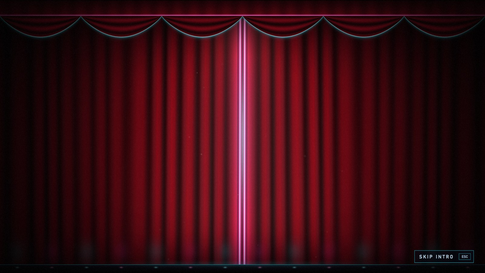
Figure 8.1 – 2.1 s: the procedurally generated stage with the curtains closed – velvet folds in the spotlight, neon piping at the seam, scalloped valance, footlights.QQMK0148QQ
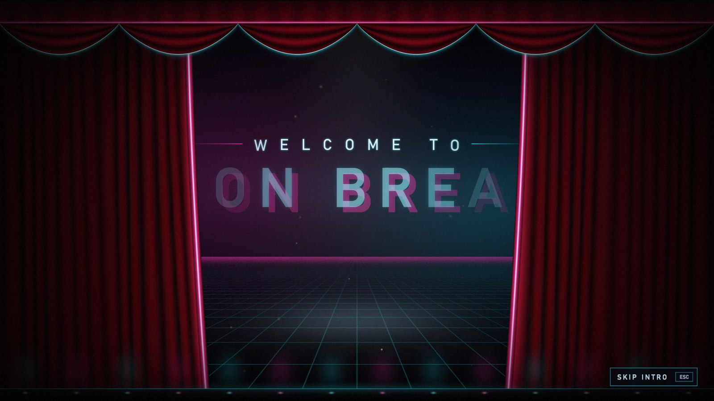
Figure 8.2 – 4.45 s: the curtains part (hems trailing the tops) and NEON BREACH ignites from the centre while the magenta layer converges.QQMK0149QQ
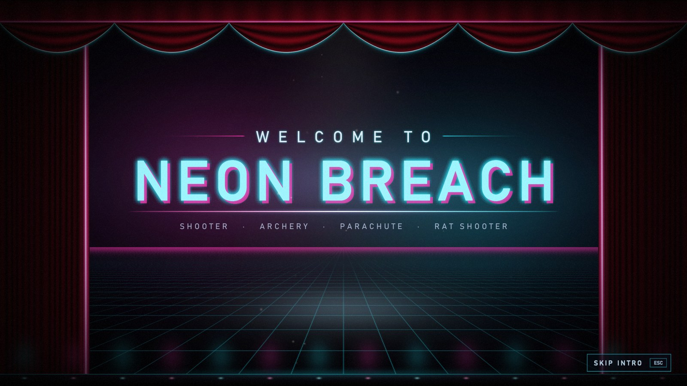
Figure 8.3 – 8.0 s: the finished title held on the open stage, curtains bunched at the sides.QQMK0150QQ
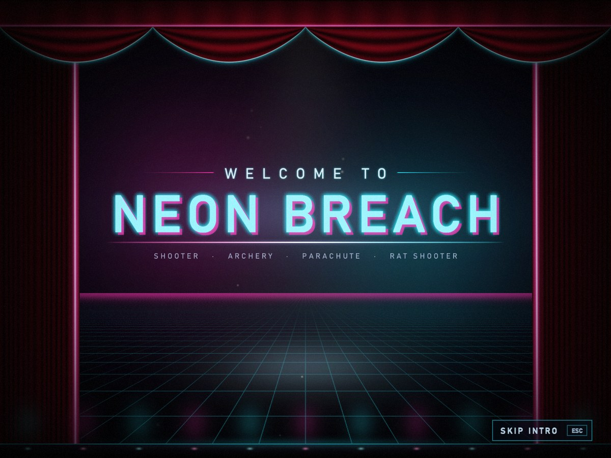
Figure 8.4 – The same moment at 4:3 (1440×1080): the title is scaled to fit between the curtains.QQMK0151QQ
Interaction. A subtle SKIP INTRO button with an ESC key hint fades in at the bottom right after 0.6 s; it highlights on hover and, like Esc, Enter, Space or gamepad Start/A, ends the intro with a 0.45 s fade instead of a hard cut. An idle mouse pointer is hidden after 2.2 s, as in a video player, and reappears when the mouse moves. The intro plays only once per application launch: returning to the menu from any mode, or from the Rat Shooter scene, never replays it. It also gives way immediately if a mode is started with F5–F7 while it runs, and it is skipped in VR, where a screen-space overlay cannot be seen inside the headset.
Responsive layout and configuration. The Canvas uses a CanvasScaler with a 1920×1080 reference matched to the screen height, like the IMGUI HUD. Everything that depends on the width – the curtain meshes, the number of valance swags, the footlights, the spotlight beam – is recomputed from the Canvas size whenever it changes, and the title is scaled to fit the gap between the opened curtains, which was checked at 16:9 (2560×1440) and 4:3 (1440×1080) (Figure 8.4). All 52 settings – durations, both animation curves, curtain colours, folds and sway, texts and font, letter spacing, zoom, glow and flicker, each volume, optional replacement audio clips, vignette, grain and dust – are Inspector fields of the Cinematic Intro object, reachable from Neon Breach → Cinematic Intro → Select Intro Settings; its Replay Intro context menu replays it in Play mode to try them out.
8.3 Main Menu and Game-Mode SelectionQQMK0152QQ
The main menu (Figure 8.5) is the hub of the application. The left column lists the four game modes with each mode's all-time best score (Shooter starts a mission with the set-up on the right, Archery builds the range, Parachute puts the player in the aircraft door at 3,000 m, Rat Shooter fades to its own scene), followed by the tutorial, leaderboard and statistics, settings (six tabs), how to play and quit. The right panel is the mission set-up for the shooter (solo or split-screen co-op, difficulty, arena and call-sign). Behind the menu the camera slowly orbits the live arena, so the menu already shows the game world.
Figure 8.5 – Main menu captured on 27 Nov 2026 after the polish pass: four game-mode buttons with best scores (Rat Shooter in its gold accent), tutorial, leaderboard, settings, help and quit; mission set-up panel on the right.QQMK0153QQ
From inside any mode, the pause menu's SWITCH MODE panel and the results screen show the three in-scene modes as mode cards (name and hot-key, a short description and the best score), and the F5, F6 and F7 keys switch directly between Shooter, Archery and Parachute.
8.3.1 Button and mode-card feedback added in the polish pass
Before the polish pass a neon button only changed colour on hover. All buttons now share the hover language that the Rat Shooter button already used: a soft pulsing outer glow (two rings whose alpha follows a 5 rad/s sine), a white left accent bar and a white label; a selected button keeps a cyan accent bar. Each mode card now sits on its own panel that brightens and pulses its border while the pointer is over it, so the card behaves as one large target rather than a small button with loose text under it. Because the change is inside the shared Button method, every menu (main, pause, settings, results, shop) received it at once without layout changes.
Figure 8.6 – Pause menu with the pointer over SETTINGS: glow, accent bar and highlighted label (27 Nov 2026).QQMK0154QQFigure 8.7 – Archery results screen with the new mode-card panels (Shooter, Archery, Parachute) and best scores.QQMK0155QQ
8.4 Navigation Flow and Scene TransitionsQQMK0156QQ
Figure 8.8 shows every path between screens. Shooter, Archery and Parachute live in the main scene and are switched by ModeManager without reloading; the Rat Shooter is a separate scene, loaded asynchronously behind a fade by SceneFader, and its own menu returns to the main scene the same way.
flowchart LR
I["Cinematic intro first launch only"] -->|ends or SKIP| M["Main menu"]
M -->|START MISSION| SH["Shooter waves"]
M -->|ARCHERY| AR["Archery range"]
M -->|PARACHUTE| PA["Skydive"]
M -->|RAT SHOOTER SceneFader| RS["Rat Shooter scene"]
M --> TU["Tutorial"] --> SH
SH <-->|Esc| P["Pause menu"]
AR <-->|Esc| P
PA <-->|Esc| P
P -->|SWITCH MODE / F5-F7| SH & AR & PA
P -->|RESTART| SH
P -->|MAIN MENU| M
SH -->|player dies| GO["Game over: summary, analytics, leaderboard"]
AR -->|3 rounds done| RE["Results + mode cards"]
PA -->|landed| RE
GO --> M
RE -->|PLAY AGAIN| AR
RE -->|MAIN MENU| M
RS -->|Main menu button SceneFader| M
Figure 8.8 – Navigation flow between the menus and the four game modes.QQMK0157QQ
Consistent transitions (polish pass). Previously only the scene change to the Rat Shooter faded. A short fade from black (0.5–0.6 s, smoothstep, unscaled time) now plays whenever a mission, the tutorial or an archery or parachute run starts and on every return to the menu, and the results screens fade in over 0.5 s. The fade clock starts on the first frame actually drawn: the first test showed that building the Parachute island took longer than the fade, which was used up before anything appeared (Figure 8.9, Figure 8.11).
Figure 8.9 – Parachute start, first frame: black (mean brightness 3.0 of 255).QQMK0158QQFigure 8.10 – 0.25 s later: the island fading in (48.1); complete at 1.0 s (128.3).QQMK0159QQ
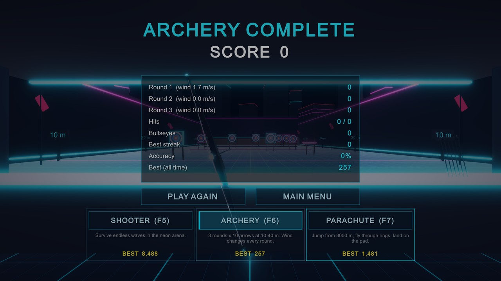
Figure 8.11 – Archery results 0.2 s after the run ended: the panel is still partly transparent.QQMK0160QQ
8.5 Gameplay HUDs of the Four ModesQQMK0161QQ
All four HUDs follow one grid: mode status top-centre, score and best score top-right, situational information top-left, player resources bottom-left or bottom-right, and a one-line control hint at the bottom centre. Table 8.2 lists the elements; the figures below show each HUD in play.
Table 8.2 – HUD elements of the four game modesQQMK0162QQ
Mode
HUD elements and feedback
Shooter
Wave number and hostiles left; score, best score and combo multiplier; radar; health, shield, medkits and dash bars; weapon name, magazine/reserve ammunition, grenades and weapon slots 1–3; crosshair; hit markers (white body, red head, X on kill); floating damage numbers; red damage-direction indicators; low-ammo and RELOAD prompts with a reload progress bar; wave banners and toasts
Archery
Round n/3 and one pip per arrow left; score and best; wind panel (speed, direction arrow and tail/head/crosswind label); draw meter (DRAW n% → FULL DRAW); breath bar when holding breath; hit text (MISS, +points, BULLSEYE! with streak multiplier); new trajectory guide; round summary with per-arrow scores
Parachute
Phase (IN THE PLANE, FREE FALL, DEPLOYING, CANOPY, LANDED) and timer; altimeter with an altitude tape that marks the deploy window, the “pull now” warning band and the auto-deploy line; vertical speed and ground speed; speed-control gauge; parachute state; rings and coins collected; landing-pad radar with distance; large OPEN PARACHUTE prompt that appears only inside the deploy window and blinks red below the warning altitude
Rat Shooter
Level, time left and mice remaining; score with combo; ammunition with a reload animation; headshot and combo call-outs; countdown; level-clear summary with time, ammo and accuracy bonuses and 1–3 stars; best score with a NEW! tag
Figure 8.12 – Shooter HUD at the start of wave 1 (27 Nov 2026).QQMK0163QQFigure 8.13 – Archery trajectory guide at 69 % draw (enlarged crop).QQMK0164QQFigure 8.14 – Archery: bullseye with streak multiplier and the wind panel.QQMK0165QQFigure 8.15 – Parachute: the OPEN PARACHUTE prompt inside the deploy window.QQMK0166QQFigure 8.16 – Rat Shooter HUD: level, timer, mice left, score and ammunition.QQMK0167QQFigure 8.17 – The guide at full draw: a flatter, faster arc.QQMK0168QQ
8.5.1 Archery trajectory guide
The archery interface had no way to show how draw strength, gravity and wind shape a shot. The new guide is a dotted cyan arc that appears once the bow is drawn past 12 %, fades in with the draw and brightens at full draw. It is computed every frame by Arrow.Predict, which runs exactly the same integration as a real arrow (gravity, quadratic drag, the current round's wind and swept raycasts against the range), so the arc ends where the arrow would actually land (Section 9.2). Each dash is 40 ms of flight. On the desktop the arrow is launched from the eye, which would make the true path an end-on dot under the crosshair, so the guide starts at the tip of the nocked arrow and blends onto the predicted path with a (1−t)2 weight; the far end, including the predicted impact point, is unchanged. The far end is drawn at reduced opacity, so reading the exact impact remains part of the skill.
8.6 Pause, Results and Game-Over ScreensQQMK0169QQ
The pause menu (Esc, or the VR menu button) freezes time and offers Resume, How to Play, Settings, Restart (or Skip Tutorial), Switch Mode, Main Menu and Quit. The shooter's game-over screen has summary, analytics (damage heat-map, kills per wave) and leaderboard tabs; the archery and parachute results show the score, a NEW HIGH SCORE! banner, a breakdown, PLAY AGAIN, MAIN MENU and the mode cards.
8.7 Tutorial, Help and SettingsQQMK0170QQ
First-time players are taken through an eight-step interactive tutorial; each step states a goal (look around, move, sprint and jump, shoot the targets, reload, aim down sights, throw a grenade, collect a power-up) and advances only when the player has done it. F1 toggles a help overlay with the controls of the current mode, F3 an FPS counter and F4 a performance overlay. The settings screen has six tabs: gameplay (mouse sensitivity, field of view, screen shake, invert-Y, tutorial replay), graphics (post-processing, VSync, bloom intensity, FPS counter, full screen), audio (master and music volume, HRTF spatial audio), controls (rebinding of all 15 actions), VR comfort (vignette on/off and strength, snap or smooth turning with angle or speed, seated mode, hand tracking, haptics, mixed reality) and language (English, Spanish, French and German through the Loc table).
8.8 Controls for Every Input MethodQQMK0171QQ
Every device writes into the same PlayerInputState (Chapter 4), so the controls in Table 8.3 drive identical gameplay code. Keyboard bindings are the defaults and can be changed in the settings.
Table 8.3 – Default controls for keyboard and mouse, gamepad and VR controllersQQMK0172QQ
Action
Keyboard + mouse
Gamepad
VR controllers (OpenXR)
Move / look
W A S D / mouse
Left stick / right stick
Left stick / head; right stick snap or smooth turn
Fire / draw bow
Left mouse button
Right trigger
Right trigger
Aim, zoom
Right mouse button
Left trigger
Left trigger (zoom)
Reload
R
X
Right grip
Jump / sprint
Space / Left Shift
A / left stick click
A / left stick click
Crouch, slide / dash
Left Ctrl / Q
B / LB
Right stick back / right stick click
Grenade / melee
G / V
RB / R3
Left trigger / left grip
Weapons / medkit / light
1, 2, 3 / H / F
Y (cycle)
B (cycle) / Y / X
Pause
Esc
Start
Left menu button
Switch mode
F5 Shooter, F6 Archery, F7 Parachute
Pause → Switch mode
VR menu
Archery breath
Hold Shift while zoomed
Left stick click
Left stick click
Parachute
Configurable inputs in SkydiveSettings; by default Space jumps from the aircraft and opens the parachute, W A S D track and steer, the mouse turns and leans, and the HUD hint line always shows the keys bound for the current phase.
Rat Shooter
Mouse aim, left button fire, right button aim down sights, R reload, Esc or P pause.
8.9 VR User InterfaceQQMK0173QQ
In VR, IMGUI cannot be seen inside the headset, so VRMenu draws the same menu as a world-space panel in front of the player, and VRMenuDriver casts a laser from the right controller (ray-casting selection [28]); the trigger clicks the highlighted button. During play a wrist display on the left hand shows health, ammunition, wave and score (mini-game modes put their own read-out there), so no head-locked HUD is needed. The VR menu was exercised end to end with the OpenXR Mock Runtime (Figure 5.4 (a), Chapter 5).
8.10 Heuristic Usability ReviewQQMK0174QQ
The interface was reviewed against Nielsen's ten usability heuristics [30]. Table 8.4 lists how the project addresses each one; the review was done by the two authors, not by external users, so it is an expert review rather than a user study (Section 13.2).
Table 8.4 – Review of the interface against Nielsen's usability heuristicsQQMK0175QQ
Heuristic
How NEON BREACH addresses it
Visibility of system status
Persistent HUD values; draw meter, reload bar, altitude tape and deploy window; trajectory guide while drawing
Match with the real world
Metres, m/s and km/h; physically based arrows and free fall; familiar shooter conventions
User control and freedom
Skip the intro at any moment; pause, restart, switch mode and main menu from every mode; skip tutorial; F5–F7 hot-keys
Consistency and standards
One button style, one panel style, one fade transition and one HUD grid in every mode; the intro uses the menu title's cyan/magenta identity and hands over through the HUD's own fade
Error prevention
Confirmation before resetting statistics; deploy prompt and auto-deploy safety in Parachute
Recognition rather than recall
Bound keys printed in the hint line of every phase; mode cards show hot-keys
Flexibility and efficiency
Key rebinding, hot-keys, four input methods, quick restart
Aesthetic and minimalist design
Information at the screen edges; the centre is kept for the crosshair and the world
Help users recover from errors
Missed shots show MISS; the Parachute auto-deploys at the safety altitude; Rat Shooter retry level
Help and documentation
Interactive tutorial, How to Play screen and the F1 help overlay
Rubric – Excellent: Effective implementation of advanced features such as animation, gesture, object/image tracking, spatial anchors, hand tracking, AI, etc.
Evidence in this chapter
A feature matrix against the rubric's list of advanced features (animation, gesture, object/image tracking, spatial anchors, hand tracking, AI) that separates what was verified in Play mode, through the OpenXR Mock Runtime, what needs real hardware and what is planned or out of scope (Table 9.1).
Physics-based gameplay with its equations: arrow ballistics with drag and wind, the trajectory prediction, skydive free fall with terminal velocity, grenades (Section 9.2).
Procedural cinematic animation in the startup intro: spring-driven cloth, a neon ignition synchronised with synthesised sound (Section 9.3).
Enemy AI for six enemy types on NavMesh, and the cartoon mouse AI with stop/run/turn behaviour and reactions to shots and near misses (Figure 9.1).
Table 9.1 summarises the advanced features and how far each one has been verified. The labels are the ones defined in the Rubric-to-Evidence Map: Verified features ran in Unity Play mode during this project; Mock XR features ran through the real OpenXR pipeline with the Mock Runtime; Needs hardware features are implemented but their final check needs a physical headset; Planned features are not implemented.
Table 9.1 – Advanced features and their verification statusQQMK0178QQ
Feature
Implementation
Status
Arrow ballistics (gravity, drag, wind)
Arrow.Fly: sub-stepped integration with swept raycasts
Grenade: custom gravity and sphere-cast bounce, 2.4 s fuse, radial damage with fall-off; enemy knock-back decaying at 18 m/s2
Verified
Enemy AI (6 types) on NavMesh
Enemy, WaveManager, runtime NavMeshSurface
Verified
Mouse AI (stop, run, turn, flee, hide)
MouseAI state machine on a baked NavMesh, MouseRig procedural animation
Verified
Procedural character animation
Enemy walk cycles, SkydiverRig, MouseRig squash and stretch
Verified
Cinematic animation (startup intro)
IntroCurtain cloth mesh with a spring-driven hem, IntroTextFX per-letter reveal and glow, neon flicker synchronised with IntroAudio
Verified 28 Nov
Split-screen local co-op
Two PlayerControllers, viewport split, gamepad for player 2
Verified
VR rig, controller input, laser-pointer menu; bow and weapons held in the tracked hand
VRRig, VRMenu, VRMenuDriver (OpenXR)
Mock XR
VR comfort: vignette, snap turn, seated mode
ComfortVignette, VRRig
Mock XR
Controller haptics
Haptics.PulseXR (impulses counted by the runtime)
Mock XR
Hand tracking and gestures
HandTracking on XRHandSubsystem: pinch to fire, open palm
Needs hardware
Mixed-reality passthrough "breach"
MixedReality: AR Foundation camera, room boundary registration
Needs hardware (logic Mock XR)
Binaural audio (ITD, ILD, head shadow)
BinauralFilter on each 3D source
Verified (desktop)
Spatial anchors and scene understanding (MR)
– (MR registration currently uses the play-area boundary)
Planned
Object / image tracking
– (not needed by any game mode)
Not implemented
Two-handed physical bow drawing in VR
–
Planned
9.2 Physics-Based GameplayQQMK0179QQ
9.2.1 Arrow ballistics
Arrows do not use a Rigidbody. Each arrow integrates its own state so that drag and wind can be modelled exactly and collisions are never missed at 78 m/s. With velocity v, wind w and the flight direction d = v/|v|, the acceleration is
a = g − kd |v| v + kw [(w − v) − ((w − v)·d) d](9.1)
where kd = 0.0006 m−1 (quadratic drag, about 3.6 m/s2 at full speed) and kw = 0.45 s−1 couples only the component of the relative air velocity that is perpendicular to the shaft. Each frame is split into up to 8 sub-steps of at most 0.75 m; for each sub-step the new position p + vh + ½ah2 is checked with a raycast against the environment layer, so a hit on a 4 cm bullseye ring is found even when the arrow moves 1.3 m per frame. Launch speed rises with the draw D ∈ [0, 1] as v0 = 14 + (78 − 14) D0.85 m/s.
9.2.2 Trajectory prediction (polish pass)
The trajectory guide (Chapter 8) needs the path before the arrow exists. Arrow.Predict runs Equation 9.1 with a fixed step of 40 ms and the same raycast test, writes up to 48 points (1.9 s of flight) into a pre-allocated array and reports whether the path ends on a surface. Using the identical model, rather than a simpler parabola, guarantees that the guide and the real arrow agree, including the round's wind. The cost is at most 48 short raycasts per frame, and the point array is pre-allocated and reused (only the small colour gradient is rebuilt each frame while the bow is drawn); with the guide visible the Archery mode measured 3.1 ms per frame (Chapter 12).
9.2.3 Free fall and parachute flight
In free fall the vertical velocity vy follows gravity against quadratic drag. The drag coefficient is not a constant: it is recomputed from the terminal velocity vt of the current body position, so that changing position (belly-to-earth, head-down dive, spread eagle) moves the jumper smoothly to a new equilibrium:
c = g / vt2, dvy/dt = −g + cvy2 (falling) (9.2)
At vy = −vt drag equals gravity, so the speed settles exactly on the terminal velocity; when the jumper slows down from a dive, the code clamps the speed so that it settles on, not past, the new vt (ParachuteController).
After deployment the canopy flies at a glide ratio with A/D steering and brakes; holding the flare input near the ground converts forward speed into lift for a soft landing. Touchdown is detected from the CharacterController's collision flags, and the run is scored as rings + coins + landing accuracy (distance to the pad) + landing softness + time bonus − penalties (for example an automatic deployment).
The startup intro (Chapter 8) is animated entirely by code, with no Animator or clips. Three techniques make it feel physical rather than scripted:
Spring-driven cloth. The top of each curtain follows the designer's opening curve pt(t); the hem follows the top through a damped spring, so it lags while the curtain accelerates and swings past the stop before settling (Eq. 9.3). The leading edge at height v (0 = hem, 1 = top) interpolates between the two with weight 1 − (1 − v)1.6, so the lag grows towards the floor, and a travelling ripple whose amplitude grows with the curtain's speed runs along the cloth. The sway setting in the Inspector scales the softness of the spring; 0 makes the curtain rigid.
Per-letter typography. A uGUI mesh effect (IntroTextFX) moves each glyph: letter spacing is animated by character position (so word gaps stay wider than letter gaps), letters fade and rise in from the centre outwards with a staggered start, a soft glow is built from 36 offset copies of each glyph (3 rings × 12 directions), the magenta layer converges onto the cyan letters, and a light sweep passes across the finished title.
Synchronised neon ignition. One step function (brightness 0.85, 0.1, 1, 0.25, 0.9, 0.5, 1 at 0, 0.05, 0.09, 0.17, 0.22, 0.34 and 0.40 s) drives both the title's flicker and the gate of the 120 Hz neon buzz in the reveal sound, and the reveal clip is started so that its hit lands exactly on the ignition, so picture and sound cannot drift apart.
p̈b = k (pt − pb) − 2ζ√kṗb, k = 26 / sway, ζ = 0.42(9.3)pt, pb: opening of the curtain top and hem (0 closed, 1 open). The spring is integrated in three sub-steps per frame; with ζ < 1 it is under-damped, which produces the swing past the stop.
The four sound tracks (score, ambience, curtain sweep and reveal) are synthesised by IntroAudio on a worker thread (Task.Run) while the first frames are drawn, using band-limited (PolyBLEP) sawtooth pads, state-variable filters for the fabric swoosh and audience murmur, and a small Schroeder reverb. They are composed against the intro's own timeline, so changing a duration in the Inspector also moves the musical hit and the curtain sound. The timeline waits at most 0.6 s for them and otherwise starts the music late at the matching offset.
9.4 Enemy AI (Shooter)QQMK0181QQ
All six enemy types share one Enemy class that follows NavMesh paths (AI Navigation package, NavMesh built at runtime) and adds per-type behaviour: the grunt runs at the player and claws in melee range; the gunner keeps its distance, flanks and fires bursts; the drone circles and shoots; the sniper finds a distant perch with line of sight (Reposition → Aim → Cooldown) and telegraphs a laser for 1.4 s before a heavy shot; the tank carries a frontal shield that must be flanked or grenaded; and the boss uses a fan attack, a ground slam to be jumped and summoned minions.
Hit reactions. Every hit flashes the enemy white through a MaterialPropertyBlock (no material copies), knocks it back along the shot, and spawns particles, a floating damage number and a hit or headshot sound; shots on the tank's shield show a blocked marker. WaveManager scales enemy count and mix with the wave number and difficulty.
9.5 Cartoon Mouse AI (Rat Shooter)QQMK0182QQ
Each mouse is a NavMesh agent controlled by an eleven-state machine (Figure 9.1). Mice wander to random spots, food and cover with randomised gaits (walk, run, dash), zig-zag paths, sudden stops and direction changes, then idle for a random time with a non-repeating action (look around, stand up and sniff, groom, sit) before bolting again. Five variants differ in size, speed, boldness, erratic movement and burrow chance, which makes the population feel like individuals.
Figure 9.1 – State machine of a cartoon mouse (MouseAI.State).QQMK0183QQ
Reaction to shots and misses. Every shot is reported to every live mouse with its ray and impact point. A near miss (under about 2.8 m) makes it panic: it hops, squeaks and runs to the nearest burrow, a hiding spot out of the player's line of sight, or away from the threat; shots within 7.5 m make a timid mouse panic and a bold one only startle (MouseAI.OnGunshot). A hit plays a cartoon elimination – a spin into the air, a landing on its back with circling stars and a “poof” – and the HUD awards points, headshot bonuses and the combo.
9.6 VR Comfort SystemQQMK0184QQ
Comfort follows the literature in Chapter 3. ComfortVignette narrows the visible field during artificial motion: its target strength is clamp(speed/4.5 + |turn rate|/100) × the user's strength setting, eased at 4 s−1 when rising and 2 s−1 when falling, and the inner radius shrinks from 0.85 to 0.18 of the view [6]. Snap turning rotates about the head (not the rig origin) in 15–90° steps with a 0.12 s blink [7]; smooth turning is optional. Seated mode recalibrates the player height for a seated user, and the camera never shakes, bobs or kicks in VR. In the Mock Runtime session the vignette reached 0.64 at 4.13 m/s and a 45° snap turn was measured (Figure 5.4 (c) and (f)).
9.7 Spatial Audio and HapticsQQMK0185QQ
BinauralFilter is an OnAudioFilterRead filter that turns a mono source into a binaural signal using the azimuth of the source relative to the listener's head: an interaural time difference from Woodworth's model, ITD = (r/c)(θ + sin θ) [22], an interaural level difference, and a one-pole low-pass on the far ear to imitate head shadow [21, 23]. It can be switched off in the audio settings. Haptics.PulseXR pulses the controllers in proportion to the event: gently while a bow is drawn, strongly on release, hits and gunshots (scaled by recoil), and on both hands for damage, explosions, the parachute opening and the landing; the Mock Runtime counted 78 impulses during the VR verification.
Rubric – Excellent: Comprehensive, technically rigorous and well-structured report.
Evidence in this chapter
Measured development hardware, software versions and the technologies and tools used (Table 10.1, Table 10.2).
Code metrics and an explanation of the most important scripts (Table 10.3).
Implementation methodology, build and run steps, and the documentation delivered with the project (Table 10.6).
The test plan with the results of the verification runs of 22, 27 and 28 Nov 2026, including the startup intro and a standalone Windows build (Table 10.4), bugs fixed (Table 10.5) and limitations.
10.1 Hardware and Software RequirementsQQMK0187QQ
Table 10.1 lists the development machine, read from Unity's SystemInfo in the running Editor, and the software versions read from the project's package manifest. All measurements in this report were taken on this machine.
Table 10.1 – Development and test environment (measured) and requirementsQQMK0188QQ
Item
Development and test machine (measured)
To run the project
CPU
13th Gen Intel Core i7-13650HX (20 logical processors)
DirectX 11/12 GPU; VR-ready GPU (GTX 1070 class or better) for PC VR
Memory
16 GB
8 GB (Editor: 16 GB)
Operating system
Windows 11 (10.0.26300)
Windows 10/11 64-bit
Input devices
Keyboard and mouse; Xbox-compatible gamepad optional
Keyboard and mouse; gamepad for co-op player 2
XR device
None physically connected; VR verified with the OpenXR Mock Runtime (Chapter 5)
OpenXR PC VR headset (e.g. Meta Quest via Link, Valve Index, HTC Vive); Quest 3 for MR passthrough
Engine
Unity 6000.5.5f1, Built-in Render Pipeline
Same Editor version to open the project
Packages
XR Plug-in Management 4.5.4, OpenXR 1.17.1, XR Hands 1.8.0, AR Foundation 6.5.0, Unity OpenXR: Meta 2.5.0, Input System 1.19.0, AI Navigation 2.0.14
Restored automatically by the Package Manager
The “to run” column is a conservative estimate based on the measured frame times (Chapter 12), not a test on minimum-specification hardware.
10.2 Technologies and ToolsQQMK0189QQ
Table 10.2 – Technologies and tools used to build and verify the projectQQMK0190QQ
Technology / tool
Use in the project
Unity 6 Editor, C# [36]; PhysX; AI Navigation [17]
Engine and scripting of all gameplay, UI and content; collisions and raycasts; runtime NavMeshes
OpenXR, XR Management, XR Hands, AR Foundation, Meta OpenXR [11–15]; Input System [16]
VR and MR runtime, controllers, hands, passthrough and boundary; keyboard, mouse, gamepad and rebinding
IMGUI, TextMesh, uGUI 2.5
Desktop menus and HUDs; world-space VR text; the startup intro (Canvas, CanvasScaler, CanvasGroup, mesh effects)
Hand-written HLSL shaders
Post-processing, comfort vignette, toon shading, sky and effects
Unity CLI (Pipeline package), Git
Recompiles, Play-mode control, script eval checks and Game-view captures for the verification runs; version control
10.3 Code Metrics and Project StructureQQMK0191QQ
The project contains 129 C# scripts with 33,412 lines (counted on 28 Nov 2026 with find Assets -name "*.cs" | xargs wc -l; the module breakdown is in Table 4.1). Code is organised in three namespaces: NeonBreach (shared framework, Shooter, Archery, Parachute, VR, the startup intro), NeonBreach.RatShooter and NeonBreach.Farm, under Assets/Scripts (Core, Player, Weapons, Enemies, Modes, UI, VR, World, Rendering, Intro, Editor), Assets/RatShooter and Assets/FarmSniper. Gameplay constants are exposed in the Inspector with tooltips, so the game can be tuned without code changes: SkydiveSettings exposes more than 60 skydive parameters and CinematicIntro 52 intro settings.
10.4 Important ScriptsQQMK0192QQ
Table 10.3 – The most important scripts and their responsibilitiesQQMK0193QQ
Script (lines)
Responsibility
GameManager (568)
Singleton game state machine (Menu, Playing, Paused, Shop, GameOver), player set-up, score and high score, pause, cursor, transitions
ModeManager (342)
Switches between Shooter, Archery and Parachute in one scene; per-mode best scores; hot-keys F5–F7
PlayerController (636)
Movement (walk, sprint, crouch, slide, dash, jump), camera, health and shield, VR head following
PlayerInputState, DesktopInput, GamepadInput
Device-independent input: every device fills the same per-player state each frame
WeaponSystem (626)
Pistol, rifle and scatter cannon: hitscan with spread, recoil, reload, aim down sights, grenades, melee
Enemy (986), WaveManager (208)
Six enemy types on NavMesh, hit reactions; wave composition and difficulty scaling
ArcheryMode (~770), Arrow (~255), ArcheryTarget
Archery range, bow, draw, breath and sway, rounds and scoring; arrow ballistics and the new trajectory prediction; ring scoring and target motion
Editor tools that generate and save the scenes; the Neon Breach menu
AutoTest (275)
Automated smoke test, started with the command-line argument -nbSmokeTest
10.5 Implementation MethodologyQQMK0194QQ
Development was iterative. Each feature was first built as a small vertical slice in the main scene (for example a single target and arrow), played, tuned through Inspector parameters and only then extended. Three principles kept the project manageable:
One input abstraction. New devices only fill PlayerInputState; gameplay never reads devices directly, which is what made VR, gamepad and co-op support possible without branching gameplay code.
Procedural content with editor builders. Worlds, models, textures and sounds are generated by code; editor builders (Neon Breach > Build Game Scene, Rat Shooter > Build Rat Shooter Scene) run the same code to save scenes and assets, so content can always be regenerated.
Verify before documenting. Every change was compiled and played in the Editor, and the console was checked for errors and warnings. For this report the running Editor was driven from the command line (Unity CLI): recompile, enter Play mode, start modes through the game's own public methods, inject input through a virtual Input System gamepad, read state with script eval and capture the Game view. These helpers were not added to the game code.
The final polish pass followed the same method with a strict rule of small, low-risk changes: the existing scenes, assets and gameplay were not rebuilt, and each change was confined to one or two methods (Table 1.2).
10.6 Build and Run ProcedureQQMK0195QQ
Open the project folder in Unity Hub with Unity 6000.5.5f1; the Package Manager restores the packages.
Open Assets/Scenes/NeonBreach.unity (or use Neon Breach > Play From Start) and press Play: the cinematic intro plays, then the main menu appears. The Rat Shooter is reached from the main menu; FarmSniper.unity can be opened from Neon Breach > Farm Sniper. The intro is tuned on the Cinematic Intro object and can be turned off there (Play Intro) or with the command-line argument -nbSkipIntro.
For VR, run Neon Breach > VR > 2 – Configure OpenXR features once (already done in the submitted project), connect an OpenXR headset and set the OpenXR runtime (e.g. Meta Quest Link) before pressing Play; the game detects the headset and switches to the VR rig automatically.
To build: Neon Breach > Build Standalone Player, or File > Build Profiles with the three scenes in the order NeonBreach, FarmSniper, RatShooter, target Windows x86-64.
Automated smoke test: run the built player with -nbSmokeTest; it plays through the main systems, saves screenshots and writes SmokeTest/report.txt. Note that it resets the saved scores, so it should not be run on a demonstration machine.
10.7 Testing and ValidationQQMK0196QQ
Table 10.4 is the test plan. Each test was executed in the Unity Editor (Play mode) on the machine in Table 10.1, except test 32, which ran a Windows player build; the Date column states which verification run produced the result. Results are reported exactly as observed.
Table 10.4 – Test plan and resultsQQMK0197QQ
#
Test case
Observed result
Date
Result
1
Compile all scripts after the polish changes
Recompile completed; 0 errors, 0 warnings in the console
27 Nov
Pass
2
Enter Play mode in NeonBreach.unity
Main menu with four mode buttons and best scores (Figure 8.5)
27 Nov
Pass
3
Start Archery
GameState.Playing, mode Archery, round 1/3 with 10 arrows
27 Nov
Pass
4
Draw the bow (gamepad trigger)
Draw meter rose to 65–69 % after ~0.4 s and to FULL DRAW (1.0) after ~1 s
27 Nov
Pass
5
Trajectory guide while drawing
Guide enabled, 15–16 points, path ends on the range floor at 36.5–43.2 m; visible from the arrow tip (Figure 8.13)
27 Nov
Pass
6
Release the arrow
Arrow fired, arrows left 10 → 9, MISS feedback shown, guide hidden
27 Nov
Pass
7
Finish an archery run
State GameOver; results screen fades in (panel partly transparent in a frame captured 0.2 s after the end, opaque after 0.5 s); mode cards shown (Figure 8.11)
27 Nov
Pass
8
Switch to Parachute from the results screen
Playing, mode Parachute; player in the aircraft door at 2,999 m
27 Nov
Pass
8a
Fade-in on mode start (re-tested after the fix in Table 10.5)
Frames at 0 s, 0.25 s and 1.0 s after starting Parachute: mean brightness 3.0, 48.1, 128.3; Archery: 3.0, 24.8, 60.6 (Figure 8.9)
27 Nov
Pass
9
Return to menu and start a Shooter mission
Playing, mode Shooter; wave 1 with 5 hostiles; HUD complete
27 Nov
Pass
10
Pause
State Paused; pause menu with seven buttons; hover glow and accent bar on the button under the pointer
27 Nov
Pass
11
Load the Rat Shooter scene
Fade-out, asynchronous load; active scene RatShooter
27 Nov
Pass
12
Start a Rat Shooter game
Countdown, then Playing with 6 mice and 86 s left
27 Nov
Pass
13
Return from Rat Shooter to the main menu
Active scene NeonBreach, state Menu
27 Nov
Pass
14
Console after the complete run (tests 2–13)
0 errors, 0 warnings from the game
27 Nov
Pass
15
Persistent best scores
Best scores from earlier sessions still shown after restarting Play mode (Shooter 8,488, Archery 257, Parachute 1,481, Rat Shooter 5,435)
27 Nov
Pass
16
Saved scene unchanged by testing
NeonBreach.unity not marked dirty after the runs
27 Nov
Pass
17
Frame time in Archery with the guide visible
3.1 ms average (321 FPS), worst 10.3 ms in the averaging window
Compile after adding the intro (5 runtime + 1 editor script)
0 errors, 0 warnings
28 Nov
Pass
26
Press Play: the intro starts by itself
Intro playing, HUD disabled, state Menu, frame 1; timeline advancing; idle cursor hidden after 2.2 s
28 Nov
Pass
27
Hand-over to the menu
Ends at t = 9.60 s; HUD re-enabled and fades in; menu music back at the player's setting (0.45); intro Canvas destroyed; cursor visible (Figure 8.5)
28 Nov
Pass
28
Skip during the intro
Skip at t = 1.44 s; intro ended 0.45 s later with the HUD back
28 Nov
Pass
29
Start Archery while the intro plays, then return to the menu
Intro ends at once, Archery runs (state Playing); back in the menu the intro does not replay
28 Nov
Pass
30
Reload NeonBreach.unity (as on return from the Rat Shooter)
No intro; intro component disabled; HUD enabled; menu music 0.45
28 Nov
Pass
31
Different aspect ratio
At 1440×1080 the title fits between the curtains (Figure 8.4); 16:9 unchanged
28 Nov
Pass
32
Standalone Windows player with the intro
Build succeeded with 0 errors and 0 warnings; the player ran windowed for 30 s with no exceptions in its log and closed cleanly (frames were captured in the Editor only)
28 Nov
Pass
33
Console after all intro tests
0 errors, 0 warnings from the game
28 Nov
Pass
The polish-pass tests drove the game through its own public methods (ModeManager.SwitchTo, GameManager.Pause, RatShooterGame.StartGame …) and a virtual Input System gamepad, which exercises the same code paths as the menu buttons and real controllers. Restart from the pause menu and beating a high score were not re-run on 27 Nov; they are unchanged by the polish pass.
10.8 Bugs Found and FixedQQMK0198QQ
Table 10.5 – Bugs and issues found and fixed during the ESE preparationQQMK0199QQ
Issue
Fix
XR loader not enabled; OpenXR features disabled
Configured OpenXR loader and 7 features (Chapter 5)
Run In Background off (XR validation warning)
Enabled in Player Settings
Number keys mapped to wrong Input System keys
Corrected DesktopInput.ToKey (Input System orders Digit1–9 before Digit0)
“Cannot set field of view … while VR is enabled” warning
Util.SetFov skips FOV writes on stereo cameras
Fade-in used up by the Parachute island build, so no fade was visible (polish pass)
The fade clock now starts on the first drawn frame after the request
Trajectory guide invisible from the first-person view (polish pass)
The exact path is seen end-on from the eye; the guide now starts at the arrow tip and blends onto the predicted path, with a width proportional to distance
Intro curtains invisible in the Editor (28 Nov)
In uGUI 2.x a custom Graphic no longer gets a CanvasRenderer automatically; IntroCurtain now requires one explicitly
Word gaps lost under animated letter spacing (28 Nov)
Legacy Text emits no quads for spaces; spacing is now applied by character position, so “WELCOME TO” keeps its word gap
Title clipped by the curtains at 4:3 (28 Nov)
The title is now scaled to fit the gap between the opened curtains, at its widest letter spacing and hold zoom
10.9 Documentation Delivered with the ProjectQQMK0200QQ
Table 10.6 – Documentation produced for the projectQQMK0201QQ
Document
Content
This report (ESE project report)
One chapter per evaluation criterion; requirements, survey, architecture, implementation, tracking, assets, UI/UX, advanced features, testing and demonstration, with diagrams, equations, source listings and captures
README.md
Architecture diagrams (Mermaid), gameplay walkthrough with screenshots, features, controls, getting started, VR set-up, design decisions, testing, known issues and tech stack
Source-code documentation
Summary comments on the classes and key methods; Inspector tooltips on the tunable fields (for example every intro setting)
Editor tooling
The Neon Breach menu: scene builders, OpenXR configuration, Cinematic Intro (add, select settings, replay)
Report sources
Docs/ESE_Report/src: HTML chapters and build.py, which numbers figures, tables and listings, pulls the listings from the real source files and renders the PDF
10.10 LimitationsQQMK0202QQ
No physical headset test. VR was verified with the OpenXR Mock Runtime only. On-device frame rate, lens distortion, real tracking quality, hand-tracking robustness and the passthrough image have not been measured.
Mixed reality depends on Meta Quest features (passthrough camera and boundary); other headsets run the VR mode only.
No formal user study. Comfort and usability were assessed by the authors (heuristic review), not with a simulator-sickness questionnaire on participants.
Desktop UI is IMGUI. It is efficient and fully scripted but is not visible inside a headset; VR uses a separate world-space menu with a subset of the screens.
Local only. Scores and statistics are stored on the machine (PlayerPrefs); there is no online leaderboard or networked multiplayer.
Farm Sniper is a standalone scene opened from the Editor menu; it is not linked from the main menu.
Rubric – Excellent: Excellent live demonstration, presentation and technical explanation.
Evidence in this chapter
Set-up checklist and the execution procedure for the demonstration machine (Table 11.1).
A timed 15-minute demonstration script that opens with the cinematic startup intro and covers the main menu and all four game modes (Table 11.2).
The features to show in each mode with the expected outcome and the result observed in the rehearsal run of 27 Nov 2026 (Table 11.3).
A map from each rubric criterion to the moment of the demonstration that evidences it, technical talking points and a contingency plan (Table 11.4).
11.1 Demonstration Set-upQQMK0204QQ
Table 11.1 – Set-up checklist for the demonstrationQQMK0205QQ
#
Item
Check
1
Laptop on mains power, Windows performance mode, external display (optional)
Game view runs above 200 FPS (F3 counter)
2
Unity 6000.5.5f1 with the project open, NeonBreach.unity loaded, console cleared
0 errors, 0 warnings
3
Game view set to 1920×1080 (16:9), Maximize on Play on
HUD layout fills the screen
4
Mouse, keyboard, and a gamepad for co-op (optional)
Gamepad detected in the mission set-up
5
Audio output on, master volume about 70 %
Click and ambience sounds audible
6
Optional: OpenXR headset connected and set as the active OpenXR runtime
“VR headset detected” on the desktop menu
7
Backup: a Windows player built beforehand (Neon Breach > Build Standalone Player) and this report's screenshots
Build starts from Explorer
8
Do not run the automated smoke test on the demo machine (it resets the saved best scores)
Best scores visible on the menu
11.2 Execution ProcedureQQMK0206QQ
Open the project in Unity Hub and wait for the import; open Assets/Scenes/NeonBreach.unity and press Play (or Neon Breach > Play From Start). The cinematic intro plays (about 10 s; Esc or SKIP INTRO ends it early), then the main menu fades in with the arena orbiting behind it. Select modes with the mouse; Esc pauses, F5/F6/F7 switch between the in-scene modes, F1 shows help and F4 the performance overlay. Finish with MAIN MENU → QUIT, or stop Play mode.
Press Play with the sound on: the curtains open, the title ignites and the intro hands over to the menu; point out that it is generated entirely in code
0:15–1:30
Introduction
Problem statement, objectives, the four game modes and the single shared framework; show the main menu and its hover feedback, best scores and the mission set-up
1:30–4:30
Shooter
Start a mission: movement (sprint, slide, dash), the three weapons (keys 1–3), aim down sights, a grenade, hit markers and damage numbers, enemy hit flash and knock-back, the shield tank; clear a wave and show the shop; pause menu
4:30–7:00
Archery
Switch with F6 (fade transition). Draw slowly to show the trajectory guide changing with draw strength; read the wind panel; zoom and hold breath; hit a bullseye; show the streak multiplier and the round summary
7:00–10:00
Parachute
Switch with F7. Jump on the green light, track and turn through 360° with the mouse, dive and slow down (terminal velocity changes), collect a ring, wait for the OPEN PARACHUTE prompt in the deploy window, steer to the pad, flare and land; show the results and landing accuracy
10:00–12:30
Rat Shooter
Main menu → RAT SHOOTER (scene fade). Show mice that stop, run and change direction; fire a near miss and show them flee and hide; score a headshot and a combo; cartoon elimination; level-clear stars; return to the main menu
12:30–14:00
AR/VR implementation
Show the XR Plug-in Management and OpenXR feature screens, the VR rig code and the Mock Runtime VR frames in this report; if a headset is available, put it on and show the laser menu, combat and comfort vignette
14:00–15:00
Wrap-up
Performance overlay (F4), testing summary, limitations and future scope; questions
11.4 Features to Demonstrate in Each ModeQQMK0209QQ
Table 11.3 – Features to demonstrate, expected outcome and rehearsal result (27 and 28 Nov 2026)QQMK0210QQ
Mode
Feature
Expected outcome
Rehearsal
Intro
Curtains, title reveal, sound
Plays on Play; hands over to the menu after 9.6 s with the menu fading in
Observed (28 Nov)
Skip
Esc / SKIP INTRO ends it with a 0.45 s fade; not replayed on return to the menu
Observed (28 Nov)
Menu
Mode buttons, hover feedback, best scores
Glow and accent bar on hover; best scores of all four modes
Observed
Transitions
Fade from black on every mode start; scene fade to the Rat Shooter
Observed
Shooter
Wave start, HUD, weapons
Wave banner, hostiles count, health/ammo bars
Observed
Pause / resume / main menu
Time stops, menu works, returns to the main menu
Observed
Archery
Draw, trajectory guide, release
Guide grows flatter with draw; arrow follows the guide
Observed
Results and mode cards
Results fade in; PLAY AGAIN / MAIN MENU / mode cards
Observed
Parachute
Plane door, altimeter, deploy window
Altitude tape with deploy and warning bands; OPEN PARACHUTE prompt only in the window
Observed (plane phase); prompt in earlier captures
Canopy, flare, landing
Soft landing near the pad, landing score
Earlier captures (22 Nov)
Rat Shooter
Countdown, mice movement
Mice emerge and move; timer runs
Observed
Near miss, hit, elimination
Mice flee and hide; cartoon elimination; score and combo
Earlier captures (22 Nov)
11.5 Criterion-to-Demonstration MapQQMK0211QQ
Table 11.4 – Where each evaluation criterion is evidenced during the demonstrationQQMK0212QQ
Mode switching without reloading; Rat Shooter scene load; the intro's hand-over to the menu; architecture diagram
4
AR/VR implementation
OpenXR configuration screens, VR rig, Mock Runtime frames, headset if available
5
Tracking and registration
Coordinate chain and room-scale following (Chapter 6); collision and raycast hits in every mode
6
3D modelling and environment
The intro's procedural theatre stage; four procedurally built worlds, lighting and effects
7
Interaction and UI/UX
Cinematic intro and skip; menus, HUDs, transitions, trajectory guide, settings and tutorial
8
Advanced features
Spring-driven curtain animation and synchronised neon ignition; arrow and free-fall physics, enemy and mouse AI, haptics and comfort
9
Technical documentation and report
This report, test plan and build procedure; the intro's Inspector settings
10
Demonstration
The script above
11.6 Technical Talking PointsQQMK0213QQ
Why one input state? Every device fills PlayerInputState, so gameplay code is written once and works with mouse, gamepad, VR controllers and hands; this is what made VR and co-op affordable.
How does the arrow know where it will land?Arrow.Predict runs the same equations as the real arrow (gravity, quadratic drag, wind, raycasts) 40 ms at a time; the guide is therefore exact, and on desktop it is drawn from the arrow tip and blended onto the predicted path.
How is free fall modelled? Drag is set so that it equals gravity at the terminal velocity of the current body position (Equation 9.2), so the speed settles smoothly when the posture changes.
How do the mice decide to flee? Each shot is broadcast with its ray and impact point; each mouse measures its distance to both and panics, startles or ignores it depending on distance and its boldness.
What is verified in VR and what is not? The OpenXR pipeline was executed end to end with the Mock Runtime; on-device performance, hand-tracking robustness and passthrough need a real headset (Chapter 10).
Where are the assets? Everything is generated in code; editor builders save the generated scenes and meshes. Even the intro's velvet, valance, floor grid and its music are generated at start-up.
How does a uGUI intro hand over to an IMGUI menu? IMGUI always draws over uGUI, so the intro disables only the HUD component while it plays, ends on the HUD's own fade colour and re-enables it with the HUD's existing fade-in; the menu code was not changed.
11.7 Contingency PlanQQMK0214QQ
Editor fails to open or import is slow: run the pre-built Windows player, or present from the screenshots in this report.
No headset or runtime problem: show the Mock Runtime VR frames and the OpenXR configuration screens (Chapter 5); state clearly that on-device testing is future work.
Low frame rate on the projector: lower the Game-view resolution; frame time is normally around 3 ms.
Time is short: press Esc during the intro to go straight to the menu; it does not replay later in the session.
Input not reaching the Game view: click inside the Game view to give it focus (the Input System only sends mouse and keyboard input to a focused Game view).
Chapter 12Results and DiscussionQQMK0215QQ
12.1 PerformanceQQMK0216QQ
Frame times were read from Unity's built-in frame-timing counters through the project's performance overlay (F4) in Editor Play mode at the Game-view resolution, on the machine in Table 10.1. Table 12.1 and Figure 12.1 summarise the results. Every mode stays far inside the 11.1 ms budget of a 90 Hz headset; the trajectory guide keeps Archery at 3.1 ms, and the startup intro, with its cloth meshes and letter effects rebuilt every frame, runs at about 2.9 ms. Editor measurements include Editor overhead, so a standalone player is expected to be at least as fast; on-device VR frame times were not measured (Chapter 10).
Table 12.1 – Average frame time per mode on the development PCQQMK0217QQ
Mode / scene
Average frame time (ms)
Approx. FPS
Measured
Shooter – Neon Grid (combat)
3.3
300
22 Nov
Shooter – Foundry
2.7
370
22 Nov
Archery range
2.5
400
22 Nov
Archery range with the trajectory guide visible
3.1 (worst 10.3)
321
27 Nov
Parachute (in the plane)
3.0
330
22 Nov
Rat Shooter (level 1)
2.5
400
22 Nov
Farm Sniper (bonus scene)
2.8
360
22 Nov
Cinematic startup intro (2560×1440; 686 frames in 2.0 s at the end of the intro)
2.9
343
28 Nov
Figure 12.1 – Average frame time per mode against the 90 Hz (11.1 ms) and 72 Hz (13.9 ms) VR frame budgets.QQMK0218QQ
12.2 Achievement of the ObjectivesQQMK0219QQ
Table 12.2 – Outcome against the main objectivesQQMK0220QQ
Objective
Outcome
Several complete game modes in one project
Four game modes reachable from one main menu, plus a bonus Farm Sniper scene; all four re-tested on 27 Nov 2026 with 0 errors and 0 warnings
Device-independent interaction
Keyboard/mouse, gamepad, VR controllers and hand tracking share one input state
Working XR implementation
OpenXR configured and validated (0 issues); VR pipeline executed end to end in the Mock Runtime; real-headset testing pending
Physically plausible gameplay
Arrow ballistics with drag and wind and an exact trajectory prediction; free fall with posture-dependent terminal velocity; grenades and knock-back
Polished and consistent UX
A cinematic startup intro with skip and a seamless hand-over to the menu; shared neon style, hover animation, fade transitions in every mode, HUDs for all modes, tutorial, settings, four languages
Real-time performance
2.5–3.3 ms per frame in every mode
12.3 DiscussionQQMK0221QQ
The project's main strength is breadth on a single, coherent foundation: four quite different games share input, audio, UI and XR code, which kept each new mode small and made the VR and co-op support available everywhere. Procedural generation removed every licensing question and keeps the repository free of art files, at the cost of a stylised rather than photorealistic look. The polish passes showed the value of verifying every change in the running game: the trajectory guide (invisible end-on from the eye), the fade transition (used up by a long mode build) and the intro's curtains (no renderer in uGUI 2.x) and title (clipped at 4:3) all looked correct in the code but failed in the real game, and each was fixed only because the result was captured and measured rather than assumed. The main open risk is the absence of a physical headset test; the Mock Runtime proves the software path, but comfort and tracking quality can only be confirmed on hardware.
Chapter 13Conclusion and Future ScopeQQMK0222QQ
13.1 ConclusionQQMK0223QQ
NEON BREACH is a Unity 6 project with four playable game modes – a neon arena Shooter, Archery, Parachute and a cartoon Rat Shooter – built on one shared player, input, audio and user-interface framework and an OpenXR-based VR layer with hand tracking and a mixed-reality mode. The report has documented it against all ten ESE criteria: the problem and requirements, the technical background, the architecture, the XR implementation, tracking and registration, the procedurally generated assets, the user interface, the advanced features, the technical documentation and testing, and the demonstration plan.
In the final passes the existing project was preserved and improved only where it mattered: an exact archery trajectory guide, consistent fade transitions, animated hover feedback, and a cinematic startup intro that opens the game like a film and hands over to the unchanged main menu. Each change was compiled, played and measured, the intro was also run in a Windows player build, and every run ended with no errors or warnings and frame times around 3 ms. What remains unverified is stated plainly: VR was executed through the OpenXR Mock Runtime but not yet on a physical headset, and the passthrough and hand-tracking features need Meta Quest hardware for their final check.
13.2 Future ScopeQQMK0224QQ
On-device VR evaluation on a Meta Quest 3 over Link and as a native Android build: frame timing, tracking quality, hand-tracking robustness and the mixed-reality passthrough.
User study with the Simulator Sickness Questionnaire [5] and a usability questionnaire to evaluate the comfort settings and the interface with real participants.
Physically two-handed bow in VR: draw the string with the second controller or hand, with haptic tension feedback.
Spatial anchors and scene understanding in MR mode, so enemies and targets use real furniture as cover.
Unified VR UI for all screens (settings and statistics), and a world-space version of the Rat Shooter HUD.
Online features: a cloud leaderboard and networked co-op.
Farm Sniper linked from the main menu, with its own best score and the shared fade transition.
A VR version of the intro on a world-space stage in front of the player, since a screen-space overlay is not visible in a headset (the intro is skipped in VR today).
ReferencesQQMK0225QQ
I. E. Sutherland, “A head-mounted three dimensional display,” in Proc. AFIPS Fall Joint Computer Conference, vol. 33, pp. 757–764, 1968.
P. Milgram and F. Kishino, “A taxonomy of mixed reality visual displays,” IEICE Transactions on Information and Systems, vol. E77-D, no. 12, pp. 1321–1329, 1994.
R. T. Azuma, “A survey of augmented reality,” Presence: Teleoperators and Virtual Environments, vol. 6, no. 4, pp. 355–385, 1997.
J. J. LaViola Jr., “A discussion of cybersickness in virtual environments,” ACM SIGCHI Bulletin, vol. 32, no. 1, pp. 47–56, 2000.
R. S. Kennedy, N. E. Lane, K. S. Berbaum and M. G. Lilienthal, “Simulator Sickness Questionnaire: an enhanced method for quantifying simulator sickness,” International Journal of Aviation Psychology, vol. 3, no. 3, pp. 203–220, 1993.
A. S. Fernandes and S. K. Feiner, “Combating VR sickness through subtle dynamic field-of-view modification,” in Proc. IEEE Symposium on 3D User Interfaces (3DUI), pp. 201–210, 2016.
Y. Farmani and R. J. Teather, “Evaluating discrete viewpoint control to reduce cybersickness in virtual reality,” Virtual Reality, vol. 24, pp. 645–664, 2020.
M. Slater, M. Usoh and A. Steed, “Taking steps: the influence of a walking technique on presence in virtual reality,” ACM Transactions on Computer-Human Interaction, vol. 2, no. 3, pp. 201–219, 1995.
G. Welch and E. Foxlin, “Motion tracking: no silver bullet, but a respectable arsenal,” IEEE Computer Graphics and Applications, vol. 22, no. 6, pp. 24–38, 2002.
S. Han et al., “MEgATrack: monochrome egocentric articulated hand-tracking for virtual reality,” ACM Transactions on Graphics, vol. 39, no. 4, art. 87, 2020.
The Khronos Group, The OpenXR Specification, version 1.1. [Online]. Available: https://registry.khronos.org/OpenXR/
Unity Technologies, AR Foundation package documentation, v6.5. [Online]. Available: https://docs.unity3d.com/Packages/com.unity.xr.arfoundation@6.5/manual/
Unity Technologies, Input System package documentation, v1.19. [Online]. Available: https://docs.unity3d.com/Packages/com.unity.inputsystem@1.19/manual/
M. Mononen, Recast & Detour navigation-mesh toolset. [Online]. Available: https://github.com/recastnavigation/recastnavigation
P. E. Hart, N. J. Nilsson and B. Raphael, “A formal basis for the heuristic determination of minimum cost paths,” IEEE Transactions on Systems Science and Cybernetics, vol. 4, no. 2, pp. 100–107, 1968.
C. W. Reynolds, “Steering behaviors for autonomous characters,” in Proc. Game Developers Conference, pp. 763–782, 1999.
Lord Rayleigh, “On our perception of sound direction,” Philosophical Magazine, series 6, vol. 13, no. 74, pp. 214–232, 1907.
R. S. Woodworth, Experimental Psychology. New York: Henry Holt, 1938.
D. R. Begault, 3-D Sound for Virtual Reality and Multimedia. Cambridge, MA: Academic Press, 1994.
K. Perlin, “An image synthesizer,” ACM SIGGRAPH Computer Graphics, vol. 19, no. 3, pp. 287–296, 1985.
J. Jimenez, “Next generation post processing in Call of Duty: Advanced Warfare,” Advances in Real-Time Rendering in Games, ACM SIGGRAPH course, 2014.
K. Narkowicz, “ACES filmic tone mapping curve,” 2016. [Online]. Available: https://knarkowicz.wordpress.com/2016/01/06/aces-filmic-tone-mapping-curve/
A. Lake, C. Marshall, M. Harris and M. Blackstein, “Stylized rendering techniques for scalable real-time 3D animation,” in Proc. 1st International Symposium on Non-Photorealistic Animation and Rendering (NPAR), pp. 13–20, 2000.
M. R. Mine, “Virtual environment interaction techniques,” Technical Report TR95-018, University of North Carolina at Chapel Hill, 1995.
D. A. Bowman, E. Kruijff, J. J. LaViola Jr. and I. Poupyrev, 3D User Interfaces: Theory and Practice. Boston: Addison-Wesley, 2004.
J. Nielsen, “10 usability heuristics for user interface design,” Nielsen Norman Group, 1994 (updated 2020). [Online]. Available: https://www.nngroup.com/articles/ten-usability-heuristics/
Valve Corporation, Half-Life: Alyx [VR video game], 2020.
Beat Games, Beat Saber [VR video game], 2019.
SUPERHOT Team, SUPERHOT VR [VR video game], 2016.
Cloudhead Games, Pistol Whip [VR video game], 2019.
Meta Platforms, First Encounters [mixed-reality application for Meta Quest 3], 2023.